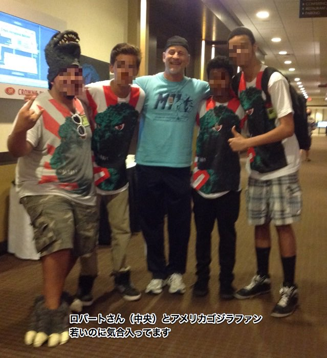
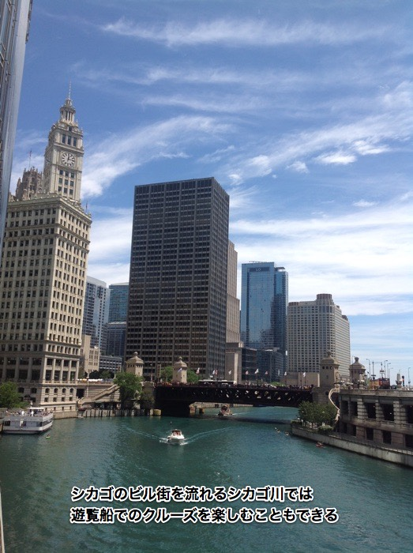
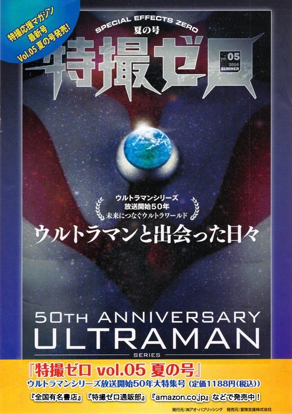

| 怪獣進化論〜または愛すべき怪獣ウダ話（完全版）【特撮ゼロ e文庫01】 | |
| 浅尾典彦 編 | |
| Kabushiki Kaisya Ao Publishing (2016) | |
怪獣進化論〜または愛すべき怪獣ウダ話（完全版）
浅尾典彦 編
怪獣進化論〜または愛すべき怪獣ウダ話（完全版）
～浅尾典彦の"ブレイン・コンカッション"より～
この電子書籍は、二〇一四年九月一三日に大阪 日本橋 ロフトプラスワン・ウエストで行われた『特撮ゼロ』プレゼンツのイベント「浅尾典彦のブレイン・コンカッション ｖｏｌ02 怪獣進化論 または愛すべき怪獣ウダ話」の内容を再録したものです。
【出演】
＜ゲスト＞
・切通理作（評論家、脚本家）
・拝二刀（「特撮ゼロ」編集長）
・ロバート・スコット・フィールド（『ゴジラvsキングギドラ』サイボーグＭ－11役）
・前畠慎悟（監督、フリー特撮マン 第二部より登場）
＜司会＞
・浅尾典彦（夢人塔）
序文「シン・ゴジラ公開！ゴジラは『お祭り』だ」
皆さんは、もう『シン・ゴジラ』はご覧になられたでしょうか？
二〇一四年公開のギャレス・エドワーズ版「ゴジラ」とは全く異なるアプローチで新たなゴジラがスクリーンにその姿を現しました。
思えば、八四年版の東宝『ゴジラ』はその公開までがファンの熱気に支えられたものであり、それ以降のゴジラ・シリーズは常に、特撮ファン、怪獣映画ファンにとっては「お祭り騒ぎ」だったともいえます。
このお祭り騒ぎも二〇〇四年の「ゴジラ ＦＩＮＡＬ ＷＡＲＳ」を最後に長い休眠に入りました。恐らく多くのファンが「日本から生み出されたゴジラでお祭りをしたい」と待ち焦がれてきたことでしょう。
今回お届けする「怪獣進化論」は、ギャレス版ゴジラが公開された二〇一四年、雑誌「特撮ゼロ」の創刊もあって、大阪のロフトプラスワン・ウエストで行われた、夢人塔と特撮ゼロ共同主催のイベントの模様の再録です。
いくつになっても「怪獣がー！特撮がー！」と騒ぐことだけはやめられない人々の小さなお祭りの記録です。
今年の「シン・ゴジラ」を見た方々の間でも、同様に語り尽くせないお話が出ている事と思いますが、二〇一四年の時も「まだまだ語り尽くせない！」と喋り倒していたわけです。やはり、ゴジラは日本のお祭りの一つだと思います。
『シン・ゴジラ』が如何なる傑作になろうとも、二〇一四年のギャレス版にはギャレス版ならではの味わいと、長い枯渇を癒してくれた「生き物としての怪獣を描こう」という普遍のロマンがあったと思います。
二〇一四年にどんなお祭りがあったのか...？
当時ご覧になった方も、「シン・ゴジラ」で久々にゴジラに触れたという方も、今更ですが、読み返してみてください。
そうすれば、今こうして新たな「ゴジラ」を語れることが出来るようになった「喜び」が何倍も感じられることと思います。
それでは、お祭りの始まりです！
【第一部】オレたちにとって「ゴジラ」とは何なのか？
■前口上
（暗い場内にアナウンスが流れる）
「関西でマニアックな伝説のメディアライター"夢人塔"浅尾典彦が、ナビゲーターを務める超ディープな世界。
毎回、マニアックで魅力たっぷりのキーワードをテーマに各界のゲストを迎えてのトークショー。新作映画の紹介などのコーナーなどもあり。
頭脳に一撃を叩き込む！"ブレイン・コンカッション（脳しんとう）"な夜をアナタと!!
ブレ・コンよろしく!!」
（照明が点き、司会席に浅尾氏が現れる）
浅尾 皆さん、こんばんわ。夢人塔・浅尾典彦でございます。お元気ですか。
「浅尾典彦のブレイン・コンカッション２」にお越しいただきましてどうもありがとうございます。
おかげをもちまして、二回目がちゃんとできるようになりまして、嬉しかったです。
今回はですね。「怪獣進化論」ということでございまして、スペシャルゲストをお呼びしてトークショーをやらせてもらいます。
ここにもあります「特撮ゼロ」という新雑誌が出来まして、もう「八〇年代のスピリッツを今に蘇らせる魂で特撮を語ろうじゃないか」という連中が集まって作っている雑誌でございます。
なので、今宵は、こちら「特撮ゼロ」のプレゼンツということでやらしていただきます。
では早速、「怪獣進化論」のゲストをお呼びいたしましょう。
「特撮ゼロ」編集長 拝二刀さんです。どうぞ。
（拍手とともに、拝氏、登場）
さて、続きまして評論家、脚本家の 切通理作さんです。
（切通氏、登場）
そして、お待たせいたしました。
『ゴジラvsキングギドラ』のサイボーグM－11ことロバート・スコット・フィールドさんです。
（ロバート氏、登場）
第一回はこの四名でやりたいと思っております。どうぞお掛けください。
というわけでございまして、ようこそおいで下さいましてありがとうございます。
まぁ、基本的にはフリートークなんで。
ゆるく、ダラっとやっていこうかなという感じなんですけど。よろしくお願いします。
■拝二刀さん「特撮ゼロ」への道
浅尾 拝さんはこれ（特撮ゼロ）の編集をしたんですよね。
拝 はい。
浅尾 でも思いきりましたね。何で作っちゃったんですか？ 会社辞めたんでしょ？
拝 辞めたっていうか。クビになったんです。
浅尾 クビになったんですか？ この本作るために辞めたって噂になってますけど......。
拝 かっこよくそう言った方がいいんじゃない？って言われて。じゃあ、そうしようかな？ってなりまして...
浅尾 そうなんですか。
拝 「売れない本の企画ばっかり出すな」って言われて、辞めることになりまして。
浅尾 昔「新映画宝庫」という伝説のムックシリーズがあったんですけどね。
一緒に作らしていただいていた、というより、こちら（拝）が編集長で、僕は命令されるままにタコ部屋で原稿を書いていたということがありまして。
というわけで「あの魂をもう一度」ということでこの本ができました。
（観客に本を見せる）
浅尾 買った人！まだ？ あ、持ってる？ ありがとうございます。
もしね。中身も後で見て頂いたらいいんですが、もし興味がありましたらあそこでね。
もうひとりの編集長というか代表の人が「特撮ゼロ 創刊準備編」を売ってますので、良かったら買っていただけましたらいいかなと思っております。
■切通理作 関西初見参！
浅尾 さて、続きまして。切通さんでございます。
切通 こんにちわ。
浅尾 こんにちわ。東京からわざわざお越しいただきまして本当にありがとうございました。
切通 なんかもう、ね。大阪はオタクの聖地だっていいますし。初代「ウルトラマン」が二回続けてリピート放送したという伝説も聞いてますよ。
浅尾 「ウルトラマン」が終わって、また「ウルトラマン」やって、「マグマ大使」が終わって、もう一回「マグマ大使」が始まったっていう再放送ね。
切通 初代「ウルトラマン」が終わって、その次の日からまた初代を一話からやったんでしょう？ オタクの人がテレビ局に電話して。すごい土地だなと思いましてね。
浅尾 まぁ、有りますわな。そういうのも。関西じゃあ。
切通 深夜に「スタートレック」をずっとやってたりね。そういう所に何か...乗り込んで、私が怪獣の話なんてね。申し訳ないくらい。
浅尾 いやいや、是非ね。していただきたいなと思っておりますけどね。切通さんのことはもう、よく知ってますよね、皆さん。評論やなにやらで。
切通 「特撮ゼロ」創刊準備編にも書かせていただいてるんです。「ウルトラマンギンガ」について書かせていただいていますので暇があったら読んでください。
浅尾 是非読んでくださいね。今日は「ゴジラ」話とかもお願いします。新作の「GODZILLA ゴジラ」（二〇一四）がめちゃくちゃ好きだとお聞きしたんですが。
切通 僕、「大好き!!」でもう三回観ました！ あと日本語吹替版だけ見てないんで、公開中にもう一回だけ観に行こうかなと思っているんですけどね。
浅尾 なるほど。びっくりしましたね。プロレスラーみたいなやつが出てきましてね。
切通 プロレスラー？
浅尾 "ムートー"って言うんですか？
切通 あー、そういう意味だったんですね（笑）
浅尾 なんだ!?と思いましたけどね。その辺の話もまたゆっくり話していただきたいと思っておりますが。
■ナニワのサイボーグ登場
浅尾 そして、お待たせいたしました。関西が生みましたサイボーグことロバート・スコット・フィールドさんでございます。
ロバート ハロー・エブリ・ワン！
浅尾 英語お上手ですね。
ロバート はい、「駅前留学」なんですよ。
浅尾 駅前留学！（笑）
ロバート すみません（笑）
浅尾 いやいや、もうね、ロバートさんは心は関西人なんでね。バリバリ関西弁喋りはりますんで、よろしくおねがいします。
「ゴジラ」映画に出られましたよね？
ロバート はい、「ゴジラvsキングギドラ」という作品なんですけど。
今回のゴジラ映画がヒットしているから、昔の映画の方もすごい人気が出てきて、元々のファンが久しぶりに映画見ようと燃えてきて、相乗効果で新しいファンもいっぱい増えてきました。
僕、ちょっと自慢してしまうと、海外での「この六〇周年のゴジラ映画ランキング」がですね。
やっぱり、一位は最初の「ゴジラ」一九五四年ですよ。
で二位が実は僕が出た「ゴジラvsキングギドラ」なんですよ！（場内拍手）
それで実はここにダミーヘッドがあるんですが。
（サイボーグＭ−11のヘッドを取り出す。耳からカートリッジが飛び出している）

ロバート これは当時のプロップなんですね。映画で使ったオリジナルなんです。当時のまんま。
映画観たら分るんだけど、最初、悪役で出て来て、中のディスクを入れ替えたらいい奴になる。
切通 ここ（頭に）にディスクいれるんですよね（ギミックの説明をする）
ロバート 今、だったら「ボン・ジョヴィ（Bon Jovi）」入れて聞いたりするんですけどね（笑）。
で、いい奴になって最後になんか中でゴジラ持ち上げてバァンって海に突っ込むのが、実はこの俺なんですよ。
切通 メカキングギドラと一体化してるんですよね、最後のシーンね。
「今だ！ゴジラ捕まえろ！」みたいなね。
ロバート そうそう、それ。地球を救っているんですね。
その後「ウルトラマンネオス」にも出て、もう一回地球を救ってますね。
浅尾 え!?「ウルトラマン」にも出てはるんですか？
ロバート 出たんですよ。それも「ウルトラセブン21」に変身しているんですよ。
エイリアンが地球に来て、それでバチッィっと変身して、地球をまた救ったんですよ。
「二度あることは三度ある」というんで「もう一回どっかでやらなあかんのとちゃうか」と。期待してます。
切通 あとは「仮面ライダー」ですよね！
ロバート 頑張ります！
浅尾 頑張ってください。よろしくお願いします！
ロバート お願いしますー！
■サイボーグ、怪獣フィギュアに挑戦
浅尾 いやー、こんな豪華なメンバーね、なかなか無いですからね。
先週もロバートさん。トークショーやったんですよね、阿倍野ハルカスで。
ロバート はい、最近ハルカスとここ（ロフトプラスワン・ウエスト）はよく来ますね。
浅尾 ここもよく来てるんですか。
ロバート ここも通ってますね。
浅尾 そういえば、寒河江弘1さんの回にも出てはりましたね。（寒河江さんと言えば）ガメラのミニチュアとかね。セットのミニチュアとか作ってはった方。
ロバート あれも結構面白かったですね。でも、二時間くらいの予定が、三時間以上になって。粘土持っていってフィギュア作ろうってしながらゴジラの歴史の話をしてたんですけど、僕もやってって言われていたんだけど、トークで盛り上がってたから三分しか残ってないところで粘土渡されて「何か作って」って言われて（笑）
残り三分ですよ！「うわー！どうしよう」って。元々苦手で余り分からへんかったけど、とりあえず、グアー！のバーン！ってやって粘土に目突っ込んで、はい「ヘドラ！」って。
（場内爆笑）
ロバート なんとか上手く出来ました。
浅尾 三分で話つけるって「ウルトラマン」みたいになってるけど（笑）
ロバート へへへ（笑）
■アメリカで見た「GODZILLA ゴジラ」
浅尾 今日は「ウルトラマン」の話もいいですけども、新作もアメリカから来たということで一応「ゴジラ」話ということでして。
東宝さんから予告編もらってきましたので、まずそれを観ましょうかね。
僕、東宝さんのオフィシャルで映画の宣伝協力もしてます。この秋は「舞妓はレディ」っていうやつもちゃんと宣伝しますよ。
はい、ではね「ゴジラ」の方の予告編なんかをちょっと見たいなと。
（場内暗くなり「GODZILLA ゴジラ」予告編１、予告編２、予告編３ それぞれバージョン違いを上映）
ロバート （場内明るくなり、いきなり）かっこええー！
浅尾 はい、というわけでございましてね。いいですね～。
「ゴジラ」がもう、大見栄切って吠えてましたけれども、すごいなーと。
もちろん皆さんご覧になっていると思うんですけどね。どうですか？新作「GODZILLA ゴジラ」。
拝 一応、この本（「特撮ゼロ」創刊準備編）でやるということで。
切通 そう、これ、アメリカで観てんですよね。
拝 わざわざあっちに観に行くって言ってた人、結構いて。
切通 最初アメリカで公開して、二ヶ月後ぐらいに日本に公開になって、だから先にアメリカに観に行くというね。
どうせ二ヶ月後は日本でも観れるのに、わざわざアメリカに観に行っちゃうという（笑）
拝 でもアメリカで始まった時って、まだ日本はアイマックスでやる予定がまだ立ってなくて......。
切通 そうそう、まだアイマックスでやらないかもしれなかったんですよね。
拝 やっぱアイマックスの馬鹿でかいスクリーンですよ！ アイマックスって分かります？
全員 はいはいはい。
拝 それで絶対観たいなと思ってたんで。それで、アメリカまでじゃあ行くかという話になって、何人かで行って。分散してライターの人とかバラバラに映画館に行ったんですよ。
浅尾 なるほど。
拝 今観た三本目の予告編の最後っていうのが、ホノルルの空港で初めてゴジラの全容がわかるシーン。っていうか、全身がカメラの上の方に移動していって、初めて今度のゴジラがどれ位デカイのかがやっと分ったっていう位ストーリーになかなか出てこなくて。
ただ、あのシーンで一番ビックリしたのは周りは当然外国人の方ばっかりなんですけど、あそこでゴジラがこっちに向かって吠えると、皆、凄い拍手するんですよ！あの咆哮で!!
なんかもうそれが我が事のように凄く嬉しかったですね。
浅尾 お父さんみたいな気持ちですね（笑）
拝 五四年版は当然生まれてないんで知らないんですけど、長い事「ゴジラ」「ゴジラ」「ゴジラ」みたいにバカの一つ覚えにしてきて、海の向こうで「ゴジラ」観たのは初めてなんですけど、なんか、むしろ日本より向こうの人の方が、逆に「ゴジラってこういうもんじゃないの？」っていうのを解ってくれてるみたいな？
切通 なんか、渡辺謙が普通に日本語の発音で「ゴジラ！」っていうシーンで拍手が起きたっていうのは聞きましたけどね。アメリカで。「ガッジーラ」じゃなくて。
■怪獣ファンのこだわり
浅尾 アメリカで「ゴジラ」ってもう認知されてるっていうかね。よく知られてますよね。
ロバート もちろんです。アメリカのバスケットプロ選手とＣＭで出たりとか、ダンクもしたりするんですよ、ゴジラが！
そういうのもあるし、コテコテのファンが何十年も前から「ゴジラ」やっぱり観てるんですよ。
今回の映画にもいたけど、ゴジラのファンと一緒に観に行ったからもう強烈だったですよ。出てきた瞬間に「ウワァアアアアアアア！」って言うんですよ。ゴジラを日本語の発音で「ゴジラ」って言った瞬間も「すごいなぁ！」って言ってたんですよ。
でも一つだけ残念っていうか...前にアメリカで作った映画（一九九八年のローランド・エメリッヒ監督版）と比べたら、謙さんの方が落ち着いて喋っていて、ただ「ゴジラ」て言っただけで。怖くも何とも無かった。
九〇何年の映画あったけど「あれゴジラの言い方じゃないよ」って皆言ってますけど。
一九九八年版のただ、おっちゃんが船ひっくり返してライトをつけた瞬間に「ゴジラ...！ゴジラ...！」って本当に怖がっていたからそっちの方が大きいインパクトがあったんじゃないかと。
ゴジラの言い方によって比べるとそれだけそちらのほうが良かったんじゃないかと。それは僕も「なるほど」と思っていた。
切通 ゴジラの言い方一つにもね、みんな、こだわりがあるんですよね。
ロバート そうそうそう。後で詳しく話をすると思うんですけど、アメリカで「Ｇフェス」というイベントがあるんです。
浅尾 ゴジラっていうか日本の怪獣のためのイベントですよね。
ロバート そうです、そうです。もう二一年目になってる。
浅尾 すごいですよね。
ロバート 後で詳しく話しますけど、とにかくそのアメリカのファンが強烈なんですよ。
僕ね、大体一時間くらいの講演するんだけど、質問が来るとそのやりとりだけで、一時間、二時間かかる（笑）
僕は映画には出たんですけど内容あまり詳しくなくて「八九年のゴジラの放射能と九二年のゴジラの放射能と全然違うのわかります？」って質問されてもよくわからない...。
ちょっと違うんでしょう。こう...スパイラルがかかっているとか色が若干違うとか...訳わからないですよ。とにかく細かいんですよ、みんな。
浅尾 一本しか出てないっちゅうねんな。
ロバート よーく知っているんですよね。みんな。
浅尾 よーく知ってるんです！
ロバート すごい！それでもう感動したんですよ。
浅尾 もうずっと見てますからね。
ロバート で、親子連れも多かったんですよ。お父さんも子供連れて。アメリカがそうなんだから、日本もそうなってるんじゃないかと思ったんですよ。五四年からやってるから、行った人たちもお爺さんになってて、子供から孫まで通じているんじゃないかとか思うんですけど。
浅尾 そうですよね。切通さんはどうでしたか？今回の「ゴジラ」は。
■キモは最初の登場シーン
切通 やっぱり「ゴジラ」っていうのは一番最初にゴジラが出てくるシーン、映画の中でね。そこが結構キモなんだなと思うんですけど。
一旦出てきちゃうともう後は特撮の独壇場になって、特に対決ものになると、名所なんかも壊さなきゃいけないし、ちょっと見せ場の消化試合になっちゃうような映画も今まであったと思うんですけど。
それに、今ＣＧでいくらでも作れるじゃないですか、モンスターの場面自体が。
だから、正直今ゴジラをやってもどれほどインパクトのあるものが出来るんだろうなと...。
つまり、モンスターハンターみたいな物がある。モンスターっていうのが軽い物になってしまっていて、技術的に怖い姿形で動かすだけだったらむしろ見飽きてしまっている。
そこで今インパクトあるものが出来るのかな？と思ってたんですけどね。
でも実際に映画を見てみて「あーなるほど」と。最初の登場のインパクトに、その後もずうっとこだわっている感覚がありますよね。
■「ムートー」登場の意味
切通 その後にムートーと戦いが始まった途端に（映像が）切り替わっちゃって、子供がテレビで見ている場面になる。お母さんが「早く用事しなさい！」みたいな事言ってる。いきなり遠隔化した場面になる。そうやってなかなか（ゴジラを）見せないという演出がいい。
ムートーっていう怪獣がいい脇役ぶりを出していますけど、要するにあれはガンダムで言うところのミノフスキー粒子ですよね。
電磁波を食べちゃうから電気が全部使えない。戦闘機も全部下に落ちちゃう。だから近くに寄ったところでいきなり登場してもおかしくない。
今までのゴジラ映画って、例えば新幹線が走ってきたり、電車が走ってきたりして、それを襲うシーンがカッコイイんだけど、ゴジラがノシノシ歩いてきた時に「なんで電車走ってんだ！」って突っこみあったじゃないですか。
でも、あれはムートーが電気を止めちゃてるから誰も直前まで予測できない。
しかもそれはゴジラがやってるんじゃなくてムートーがやっているってところが味噌で。
■「GODZILLA ゴジラ」は勝った映画
切通 ムートーはオスとメスがいて生殖をして何を食べているのかもしっかりわかっている。でも、ゴジラが何を食べてるのかもわからないし、オスなのかメスなのかも出てこない。この映画でゴジラとは何かって言われると主役なんですよ。
主役で、スターで、出てくる瞬間のためにムートーがいてくれて、突然現れる。そして、とてつもなくデカイと。
中途半端に大きくしていたじゃないですか、日本のゴジラって。八四年以降、80ｍにしてみたり、100ｍにしてみたり、それでも高層ビルよりかは小さかったりとかしていたんだけど。
とてつもなく大きいから見えない、ちょっとした角度からこの部分が見えるっていうのをやっておいて、あの何千ｍから上空から米軍が降りて来るっていう場面になる。
最初予告篇で見た時、これはなんのシーンなのかなと。分かんないじゃないですかアレ。なんの作戦なんだろうなって。
浅尾 分かんないけど、宣伝としては「ゴジラ対向こうのアーミー!!」
切通 なんだと思うじゃないですか。ストーリー上、ゴジラ退治ということで降下していくわけじゃないんですけど、降下していくときにムートーと戦っているのが見える。あんな上空から降りてきて、もの凄く地上の近くでパラシュートがバッと開いてトコトコトコって走ってくるけど、大丈夫なのかこいつはと。絶対死ぬなと思ったんですけど。
それはともかくとして、視覚としてね、角度、角度の中で（ゴジラを）見せていった後にこの場面見て、あれは「勝った」と。
「この映画は勝った映画だな」と非常に興奮しましたね。
僕はこの映画は三回見に行きましたけど、四回目は字幕に囚われず日本語吹き替えでぜひ見たいなと思ってます。スイマセン、すごく興奮しています。
浅尾 いやぁー、すごく興奮が伝わりましたね。
今日は、本当はね。東宝の宣伝の方も呼ぼうと思ったんですよ。そしたら大変らしくてね。で、この本も渡しました。「特撮ゼロ」は東宝にあります。書いた人も来ますよーっていったら「僕なんか行って何言ったらいいかわかんないんで浅尾さんお願いします」って言われまして。だから映像だけちょっともらってね。来たわけなんですけどね。今の切通さんの話、（東宝の人に）聞かせたかったなー。
■映画ありきの怪獣デザイン
切通 それで造形というかデザイン画集みたいなのが出回っていて、いろんな編集者の方が持っていたんですよ。公開前に。それでゴジラやムートーのデザインを見た時は正直あんまりピンとこなかったんです。
浅尾 「えっ、これ～？」みたいな？
切通 なんでこんな背びれをやたら強調してるのかなぁとかね。でも、動いている姿を見たら、このためにこういうデザインをしているんだなと。
ムートーも足だけで見えていて、あれ最初見た時は建物の柱に見えたりとかね。
要するに映画の中で動いている姿がありきで、ひょっとしたら逆算してデザインされたのかなって。
でも、逆に言うと日本ではそれほどまだ大ヒットしてないじゃないですか。そこそこヒットはしているけど、アメリカや中国に比べると大ヒットしてないのは、ビジュアルが動いている姿を見ていない人にとっては今ひとつ魅力的に感じられない。そこがあるのかなと。
だから周りの人には是非「動いているの見たらすごいから！」と言ってほしいと思いますけどね。
拝 新興宗教の教祖みたい...（笑）
切通 すみません！だって！だって、アメリカであれだけ支持されて、日本に来たらすぐ「るろうに剣心」とか「ドラえもん」に抜かれてしまうというのはねー。それは！日本人としてこれだけのものを作ってもらっておいてですね、恥ずかしいというか。
そりゃ普通の人ならいいけど俺はオタクとして「申し訳ない！」という気持ちがね。
浅尾 すごい責任感ですね。
切通 いや、別に何の義理もないんですけどなんかね。
■「ゴジラ」に思う日本文化
浅尾 なんかね。向こうで「日本のゴジラを作ろう！」っていうか。今回、僕らが見たときに許せるっていうか「僕たちのゴジラを作ってくれたな」っていう気持ちはありましたよね。
前の一九九八年版は「焼け焦げたトカゲ」とか呼ばれてて、あんまり...。モンスター映画としては悪くないんだけど、あれ「ゴジラじゃないよね」って。まあベースが「原子怪獣現わる」の焼き直しなんで仕方がないんですけど。あれを「ゴジラ」と呼ぶなという気持ちがずっと頭の中にあって。で、今回の映画はどうなんだろうとずっと楽しみにしていたんだけど、まあこれは凄い！
「ゴジラ」ってね、やっぱり日本の文化なんですよ。能や狂言、時代劇なんかに出てくる。
でも今日の切通さんの服はなぜか「宇宙刑事ギャバン」ですね（笑）
切通 みんな「ゴジラ」なのに一人だけギャバンって、ごめんなさい（笑）
浅尾 その「ギャバン」もそうなんですけど、日本には「見栄を切る」っていう文化があるわけですよ。カッコよさを見せるためにね。「ギャバン」だったら、東映の三方向からのカメラアングルでバンバンバン！と入れるとかね。時代劇なんかの見栄の切り方が全部登場しているんですけど、「ゴジラ」にもあるんですよね。その美しさというかルールっていうのがね。
切通 要するにブワッっと咆哮するっていう、あそこが見せ場。あれが最大の見せ場になっているって凄い映画だなと思って。怪獣が吠えるっていうことがね。
浅尾 そうそうそう。
切通 やっぱり、皆、あのシーンを見てすごいと思うわけじゃないですか。
浅尾 きたぞ！って。
切通 それがね！ 僕の知り合いも、怪獣とか全然興味ない女の子なんかに「見たら凄いから」って今度の映画見せたら、やっぱりゴジラが吠えるところで凄かった。別に「ゴジラ」に思い入れのある人でも、幻想のある人でもない人でも見たら、あの画から最後「グオー！」って行ったら「ゴジラがいるんだ！」っていう瞬間を持つことができた人がいたみたいなので。
浅尾 まぁ、認められてるってことですよね。これはアリ！っていうね。俺たちの「ゴジラ」だった！ 嬉しかったですね。
■オスムートーはゴキブリ？
拝 出てくる時に、吠える所でもゴジラってこれくらいデカいんだ、「とにかく、凄いやつがとにかく出てきたからえらいこっちゃ」と話しておいて、今、見栄だっていう、時代劇で形をとる？見栄を切るっていう話になりましたけど。
浅尾 間を取るってことですね。
拝 観てない人は申し訳ないんですけど、オスムートーっていうちっちゃいのがいるんですよね。今はもう公開しても東宝さんに怒られてないんで喋っちゃいますが。
浅尾 そう「喋っちゃあかんっ！」て言われたんですよ、僕ら。
切通 試写の時に「ムートーが二匹いる事と最後どこで戦うか隠しておいてください」っていう紙が配られたんです。
拝 今は何言っちゃったっていいんですけど、本を作っている時はそれを書いたらダメっていう。他の出版社さんもストーリーを細かく書いたら半分以上切られるっていう話で。とにかくゴジラっていうのを映画公開ぎりぎりまで分からないようにやりましょうっていう宣伝の方法を取られていたのでね。で、オスムートーっていうちょっと小さい奴が出てくるんです。
浅尾 小さいです。あれはゴキブリなの？
拝 ゴキブリっていうかバッタみたいな？ウザったいんですよね、周りを飛びまくっていて。だんだんゴジラもうっとおしくなってきて、最後しっぽのひと叩きでビルにぶつけて殺しちゃうんですよ。あそこの間の取り方がよかった。
切通 あそこ良かったですね。
拝 あれだけデカい怪獣であれだけデカいしっぽがあったら、振り回したくなるのは人情だと思うんです。
浅尾 人情って（笑）
拝 本当にね「うっとおしいな、コイツ！」ってゴジラは思っているだろうなと見る方に思わせておいて、この呼吸でやっつけてやろうとちゃんと間を置いた後にブンッって体全体を揺らして、しっぽのチカラでひっぱたく！
切通 「バーン！」っとやるっていうカタルシスがありましたね。
拝 二回目に見た試写会だったと思うんですけど、イイ歳こいて映画館で、しっぽで叩き付ける所で、頭ん中漫画を読んでいる感じで「ドカーンッ!!」とか言っちゃって。
浅尾 口で？（笑）
拝 そうそう。それくらい興奮しちゃいまして（笑）
■「GODZILLA ゴジラ」次の対戦相手は？
拝 でも、いろんな本にも書かれているんですけど、これから怪獣映画や特撮映画って日本や海外でも当然作られる。
浅尾 これから作られますよね。てか、もう２決定でしょ？
拝 「ゴジラ」はアメリカでは２決定2です。
浅尾 ほんで他の怪獣もいっぱい出るんでしょ？なんでしたっけ？
ロバート キングギドラとモスラも出ますよね。できたらM-11も出ればいいなぁと...（会場拍手） 頑張ります（笑）
拝 モスラとキングギドラの権利関係が通ったみたいです。一応、二本までが契約になっているんですけど、今後どうするかまだわかりませんけどね。
ロバート 今、私が着ているシャツがあるんですけどね。「ゴジラ」と「ガメラ」なんですよ。
浅尾 それ「ガメラ」なんですね。
ロバート 「ガメラ」なんです。アメリカの昔からのファンが「ゴジラの対戦相手はどれにして欲しいか？」という話をしてくるんですけど、やっぱり「ガメラ」も候補で出てくるんですよ。日本ではありえない話なんですよね。でも向こうでは「ガメラの方が強い、ゴジラの方が強い」っていう話はよく出てくるんで、次の映画が当たればこっちの方へ行くんじゃなかなという気もするんですよ。
切通 「ゴジラ対ガメラ」の実現ですね。
ロバート アメリカだったら何とかなるのかなと。
浅尾 そりゃ「エイリアンvsプレデター」作った国ですからね。
ロバート そうでしょ？そういうのがあるんですよね。もしかしたら来るのかなっていう気はするんですよね。
浅尾 「フレディ対ジェイソン」もありましたからね。
切通 レジェンダリーピクチャーズっていう今度のゴジラの会社が「キング・コング」の権利3も取得して作ることになったっていうニュースも聞いたから。これは「キング・コング」を作ったあと「キング・コング対ゴジラ」かな？と。
ロバート それも可能なんですね。
切通 それもできるかもしれない。
浅尾 「キング・コング対ゴジラ対モスラ」とか？ ややこしいか（笑）
ロバート クリント・イーストウッドも出てきて「ダーティ・ハリー」みたいな。
浅尾 「混ぜるな危険」って（笑） でも可能性はありますよね。
ロバート 今回面白いのは、まぁ、僕の勘かも知れないんですけど、日本でアメリカより公開が遅くなったのを、みんな心配していたと思うんですよ。日本でもしヒットしなかったら。ゴジラって日本の真似なので、アメリカのは日本であんまりヒットしないんじゃないかと。アメリカではガーッと伸びて、中国では初日一〇億円くらい行って、ロシアも結構行って、日本はまぁそこそこくらい行ってますけど。で、全体的に決まっているから次も決めたんですけど。
で、「パシフィックリム」もよくできている映画かなと思ったんですけど、評判は良くなかったんです。アメリカでも売れてない。中国とロシアだけ売れたらしいんです。日本ももう一つだったけど...。
浅尾 まぁまぁそうですけど、あれ（パシフィックリム）でファンは「怪獣映画まだ行けるよね」って思ったんですよね。
ロバート カイジュウ（怪獣）っていう言葉はよく出たから、スシ、テンプラ、サシミの次にカイジュウが英語になりますから。ゴジラがヒットしたから２を作ることになったんですよ。あと「ジュラシックパーク４（ジュラシックワールド）」も出てくるし、怪獣と恐竜は繋がりますから。結構そういう流れを見ていると面白いんですよ。
浅尾 怪獣だらけになりますね。
■太っちょで可愛いゴジラ？
ロバート あと、今回面白いのは日本の友達が見ると「このゴジラ太ってますね」って言ってくるんですよ。
浅尾 まぁ、そうですね。
ロバート 昔のゴジラはスーツの中に人間、中島さんとかが実際に入ってたから、どちらかといえば人間よりも太っているように見えるんですよ。でも、今回は人間は全然入ってない！ ＣＧだから。でも、人間が入っているように見えるようにしたのかなと。それかマクド（マクドナルド）食べ過ぎてああなったのかと。
浅尾 マクドナルド食べてますか（笑） まあ何食べているかは謎やけど。
切通 映画館でよくあるじゃないですか、カップの上に乗っかってる人形。あれのゴジラ版。俺、ああいうのは一回も買ったことないんだけど、ゴジラのは買って帰りましたからねー。なんか持って帰りたい。
あのゴジラって人間がスーツに入ってやっているのを元にして作ってあるらしいんだけども、やっぱり、実体としては存在していない、ＣＧなので存在していないというのが、余計に持って帰りたいっていう気持ちにすごくなってですねー。「カップでも欲しい」って気持ちになりましたね。
浅尾 それは正しいですよ。マニアとしては。手元に持っていたいという気持ちはね。
拝 今度のゴジラって可愛いんですよ。
浅尾 可愛い！？太いのに？
拝 そう、太ってるのが可愛い。
切通 赤ちゃんっぽい感じもするよね。
拝 これから強くなっていく？
浅尾 え、これってベビーゴジラなの？
拝 多分そうじゃないかなと。まだね、そんなに戦闘慣れしている描写はないんですよ。
浅尾 あぁ、確かにね。
拝 二匹とやりあっていても最後ヘトヘトになっちゃって。
切通 寝ちゃいますよね。
拝 そう、寝ちゃうんですよ。僕らも死んでいるのかと思って「あーやばいなこれ」とか思ってたんですけど、渡辺謙が見たら、目がパチッっと開いちゃって。
浅尾 あのおっちゃんが見るからや。ゆっくりさせておいてやりぃな（笑）
拝 そしたら、プルプルプルって震えて、ひと声吠えて海に帰っていく。なんかあそこがね、寝坊しちゃった子供みたいで「あ、やべぇ、ちょっと寝すぎたかな」みたいな感じで。「あと皆よろしくね」って帰っていっちゃうんだけど。
切通 昭和のゴジラって、割とそうだったじゃないですか。「キングコング対ゴジラ」とか、ゴジラ水没したままだけどキング・コングが浮上して泳ぎ去っていったり、モスラが飛んでいったりとかね。
怪獣が海の向こうにいなくなるっていうのを久しぶりに見て「これだ！」という感動がありましたね。余計な教訓とか何もなくて、ただ起き上がって、ちゃぽん！で終わりって。あれは痺れた。
浅尾 子供が「ゴジラーッ！」とか言わない。
切通 正義の味方の時代の「ゴジラ対メガロ」だろうが、いろんな映画に全部つながる。「どのゴジラも全部認めてくれた」みたいな感動がありましたよ。
浅尾 素晴らしい！
■今後の「ゴジラ」はどうなる？
浅尾 ところで、この「GODZILLA ゴジラ」は世界的にもヒットしているんですけども、これで認知されて「ゴジラ」って現実にドンドン作られていくのかな。今ここにゴジラの新聞があるんですよね。「夕刊ゴジラ」っていう新聞。
拝 夕刊だけど二ヶ月ぐらいずっと売ってるの、それ。
ロバート 僕もこの前ハルカスで買ったんですよ（笑）
浅尾 ハルカスで売ってるんですよね。これ、夕刊は安いはずやのに三二〇円もする。
ロバート そうやん。
浅尾 これ、あとで皆さんにプレゼントしますんで（会場拍手）
ロバート おぉ、ラッキー！
切通 あと、俺、不安なのは「トランスフォーマー」だって、元々日本発じゃないですか。
浅尾 そうですよ。
切通 でも「中国の方が受けるようだ」みたいな感じになっちゃったら。で、凄い日本リスペクトの「ゴジラ」も当の「日本人があんまり燃えてないな」って事になったら、次は渡辺謙が降ろされてしまって、中国人がとって代わる「ゴジラ」になったらどうしよう？とか不安があるんですよね。
浅尾 「トランスフォーマー」の最新作4がね。ずいぶん中国寄りでね。
切通 ものすごく中国寄り！
浅尾 凄く中国資本が入ってるんですよね。
切通 ああいう「ゴジラ」になってしまうんじゃないだろうかと、ボクは不安があるんで。「ゴジラ」そのものが作られるのは嬉しいんですけど、やっぱり日本人も「ゴジラ」を応援してですね。観たという人は周りにちゃんと勧めてね！これからでもいいから、ちゃんと勧めてほしい！（場内拍手）
浅尾 レンタルでまたぶわっと上がったり、ブルーレイで特典なんか付けるだろうし。
切通 「インディー・ジョーンズ」なんかも、１作目の「レイダース 失われたアーク」は日本ではそれほどヒットしなかったんですよ。
浅尾 まぁ、ねぇ。
切通 でも「インディー・ジョーンズ」はだんだんヒットしていったじゃないですか。だから見た人間の満足度が高くて「どうやら凄いらしいよ」っていうのが伝播していけば「ゴジラ」も今回が一作目と考えればですね、二作目三作目が来れば、ドンドン日本でも観客動員が倍増していくかもしれないと思うんですよ。
浅尾 なるほど、なるほど。
切通 だから、是非盛り上げていってほしいなと。
浅尾 すごいなぁ。
拝 さすが東京の人。
切通 すみません。なんか、怪しい人みたいで。
浅尾 切通さんはわざわざ東京からおいでになっているんですが、拝さんが「ずっと、しゃべってますよ」って仰っていたんで。
拝 だってこの人に、新幹線の中で「イベントで喋るからゴジラの話は止めましょうね」と言ったら「分かりました」と。でね、ゴジラの話をしないだけで、ずっと四時間半、ウルトラマン、ウルトラセブン...で喋り続けてる（笑）
■Ｍ−１１が語る「ゴジラＶＳキングギドラ」
切通 でもね！スコットさんに今日お会いしたんでしゃべりますけど「ゴジラvsキングギドラ」は公開当時に何回か見てね。凄く好きな映画なんですけど。
ロバート ええこと言うね（笑）
切通 いえいえいえ、ありがとうございます。それで二〇年ぶりくらいに昨日ＤＶＤで拝見したら全編スコットさんが出られているんですよね。ほぼ、全部。
ロバート 結構、出てますね。
切通 いなくなったと思ったらメカキングギドラの中にいたっていうのがビックリしたのと、あの映画、今見ると、ワンカットワンカットすごく丁寧だし面白い映画だなと。だってキングギドラの羽が破れるとか、首がちぎれるとかって、あの後無いじゃないですか、怪獣映画で。
ウルトラマンとかでも切断がダメだということになって、ああいう感覚ってもう、要所的にも許されなくなったっていうのもあるんだけど。しかも昭和じゃないですよねー「ゴジラvsキングギドラ」って。設定的も未来が出てきたりして面白いし、怪獣バトルなんかもキングギドラの首がバンッってちぎれたら金粉が舞うんですよ。
「すごいなこの映画」と思って、ああいう感覚ってあの後ないですよね。
ロバート 川北監督もこの映画で日本アカデミー賞もらったんですよね！ 当時も僕、役者として色々やっていたんだけど、時間がある時はいつも特撮現場を見に行ったんですよ。ボクは元々アメリカ、カリフォルニアだから、ハリウッドでは何回も見せてもらったんだけど、当時、あの映画「なんかすっごい上手く出来ていますなぁ」と思ってたらアカデミー賞まで獲っちゃったんですよ、特撮監督が。で、大森監督も元々ゴジラのファンじゃないんですけど、「ゴジラvsビオランテ」も彼が作ってたんです。「ビオランテ」はいいアイデアで、今では結構ファンが多いんだけど、当時はオリジナル怪獣に対してあまりファンはいなかったと聞いているんです。
で、興行不振で「うわぁどうしようか」ということで、昔から人気の大きな「キングギドラ」を復活させて、シリーズが息を吹き返した。それ以後ヒットが続き、凄い勢いが出て「ゴジラ」の今の状況があるんじゃないかと言われているんですよ。
■「ゴジラＶＳキングギドラ」は歌舞いてる映画だ！
切通 「ゴジラvsキングギドラ」の中で、土屋嘉男のね、元日本軍の兵士が自決しようとしていたのがゴジラザウルスに救われたと、そしてゴジラと最後目線が合ってゴジラが泣いているでしょう。あんなことまでやっているんですよ、一本の映画の中でね。ゴジラのいろんな表情を出そうっていう。割と日本ではＣＳの人気投票で「ビオランテ」が一位で、「ビオランテ」の方が好きな人はゴジラ好きには多いと思うんだけど。
浅尾 関西人ちゃいますか？
切通 あ、そうなんですかね。「vsビオランテ」確かに素晴らしいんですけど、平成になってからの「vsデストロイア」までのゴジラ映画の中で、ボクの一番好きなのは「vsキングギドラ」なんですよ。「vsキングギドラ」って滅茶苦茶に歌舞いている映画だし、いろんな発想が詰め込まれていて。しかも「アメリカの核実験でゴジラが出てきた」っていう昭和でも言わずにごまかしていることをハッキリと言ってしまっていたりとか、そういう部分でも過激だし、バトルも結構その前後やっていないようなことをやっているし、しかもゴジラが泣くとかね。「あれは土屋嘉男の幻想かも知れない」と答えを出さずに描写をしているんだけれど、ありとあらゆることをやっているじゃないですか、あの一作の中で。
浅尾 まぁ、詰め込んでいますよね。
切通 結構、野心的かつ娯楽的にVSシリーズを作っていたけど、あれはすごい作品だなと。
ロバート 今、切通さんがおっしゃったシーン、僕も大好きなんですよ。こう、涙が出て目が合って、「お前が居なかったら俺の任務は終わっていたのに」って所でガッっとやられてそうなっちゃったんだけども、今回の映画の「ゴジラがムートーの首にグワーってやってガーッとやった」所と比べられるシーンではないかと思うんですよ。違う意味で感動ですけど、あれも何回見てもあのシーンは僕らも涙が出てきそうになるんですよ。ゴジラも苦しんでいただろうし、恐竜だったけど核兵器のせいでゴジラになってタイムスリップして、アレ、すいません...なんだっけ？
切通 潜水艦ですね！
ロバート それ、潜水艦！時々出てこないですね！英語も最近出てこない時ある（笑）
で、潜水艦でまた「ゴジラ」に変わって、ずっと色々あって、やっと当時の二人が出会って、死んじゃったんですけど、これが凄い感動的なんですよ。
「今度のゴジラ」映画と比べてみてもいいくらい、どっちも感動しますね。
■「ゴジラ」は分からないから面白い
拝 「今度のゴジラ」って二〇一四年版ですね。でも、今、日本で当っている映画と真逆の作り方なんですよね。
浅尾 どういうことでしょうか？
拝 日本で当たる映画って日本映画で、今は洋画よりも邦画の方がお客さん入るんです。
浅尾 まぁ、そう言う流れになってきたんでしょうね。
拝 大体は原作があったりコミックだったり、もう既に途中までの話はみんな分かっている作品なんですよ。
浅尾 確かにそうですね。大ヒットした原作を映画化するっていう方式が多いですね。
拝 よく頑張ってラストを大きく変えるとか、途中で話をひっくり返しておいて後半で戻すとか。ただ映画って昔から言うとどうなるかわからないものを二時間なら二時間、映画館の中で楽しむもの。
やっぱり「ゴジラ」って散々言われていますけど、結局「ゴジラ」ってなんなのかわからないからこそ面白いんですよ。
浅尾 理解を超えてますからね。
拝 要するにプロデューサーの田中さん5がご存命のころ「ゴジラって何ですか？」って誰に聞かれても「わかんないんですね」って。多分本人も分かっているのか分かっていないのか半分位はぼかしていた。今回の「ゴジラ」はそれをそのまま受け継いでいた。
切通 だから「ゴジラ」ってスターなんですよ。スターっていうのは、ファンが自分に微笑みかけてくれているように見えるっていうのがね。
浅尾 「微笑みかける」んですか。
切通 勝手に幻想を持つ存在じゃないですか、だから今回の「ゴジラ」だってゴジラそのものはそもそも存在しないものなのに「このゴジラって何なんだろう」って凄く思わせるだけのものがあってそこが凄くよかったなと思う。
■渡辺謙さんは「ゴジラ」の追っかけ？
拝 一番ゴジラに詳しそうな渡辺謙の科学者が物々しく出てくるんですけど。
浅尾 背中に哀愁があるね。
拝 でも、ただのゴジラの追っかけなんですよね、あのおじさん。
浅尾 あまり分かってなかったみたいですね。
拝 あまりゴジラのことわかってなかった。
切通 あれ三回見ておかしいなと思ったのが、助手が言っているんですけど、生態系の中で神に等しい存在とか言ってね。他の「ムートーと別格だ」とよほど知っているんだなと思っていたら、二回目三回目と見てたら、あの電磁波を計測していた主人公のお父さんのフロッピーとかが残されているって事を渡辺謙が全然知らないで、彼らをスタッフとして入れて研究しようって言って「お前何も知らなかったじゃねぇか」と。「なんであの程度の知識しかなくてあそこまで専門家として生きれるの」ってね。しかも「核攻撃はするな、彼らに委ねよ」って言ってて「何なんだ！」みたいなね。その変な確信みたいなのがね、得体が知れなくていいんですよね。
浅尾 なんとなく権威に乗っかっている感じがしますよね。ほんまは知らんねんけど。
ロバート 日本語の発音良かったですよ。謙さんね。
切通 だから「ゴジラ」って言ってるだけでね説得力があってね。
浅尾 「俺、知ってんだ」みたいな。
ロバート ただそれだけですね。
切通 二回三回見ているとね、実はあんまり知らないんだよねあの人、ってわかる。
浅尾 現実に、プロモーションで日本に来た時に「僕、ガメラの方が好きなんですよ」っていってましたからね（笑）
拝 部屋に入ったら、部屋中にゴジラのポスター貼ってあるストーカーみたいな人なんじゃないかっていうね。
浅尾 設定？設定だよね。ホントじゃないよね。
拝 なんか最後、ゴジラ死んじゃったと思って目をウルウルさせてゴジラじーっと見てて、パチっと目を覚ましたゴジラを泣きそうな顔で見送ったじゃないですか。
浅尾 昭和時代は小学生が見送るのがパターンですよね。
拝 追っかけている割には「あとは怪獣に任せましょう」とか言ってること結構適当だし。
切通 あれは「あんな事で任せられる人いるんだろうか」って感じはしますね。
■再び「ゴジラＶＳキングギドラ」を語る
拝 さっき話に出てた「ゴジラvsキングギドラ」もそうなんですけど、「ゴジラvsキングギドラ」ってかなり滅茶苦茶な映画なんですよね。
浅尾 時空も飛んじゃってますしね。
拝 話の内容も、日本だったら三本四本作れるような話を一二〇分以内に全部詰め込むわけですよ。一二〇分の間にドンドン話が変わっていくのに、カットが意外と丁寧で。こいつがイイ者かと思ったら、悪役で、しかも「プログラム変えてイイ者に変わります」っていうね。あの手この手で次々話を繋いでいくっていう良さもある。
切通 一本の映画でね！ゴジラがまた悪役になって、（悪役だった）メカキングギドラに中川安奈が乗っかってね、戦いを挑むという。戦時中の話から始まっているのにあれはすごいですよね。
拝 ゴジラからしたら「俺なんなのよ」って感じでね、あっち行ったりこっち行ったりさ。でも一本の映画に「ゴジラを刺身のツマにでも何にでもしてやろう」っていう大胆な映画だった。
切通 過激な映画でしたよね。
拝 あとは意外と上手くまとめてる「ゴジラ ＦＩＮＡＬ ＷＡＲＳ」っていう当時、結構ボロクソに言われた映画があるんですけど。あの映画「ゴジラがなんぼのもんじゃ」っていう感じで、あの映画のゴジラって「番長だから強くないとダメ」っていうのがハッキリしている。
平成ガメラが出てきた後からとにかく理屈が多くなってきて「ゴジラはこういう理由があって、敵対怪獣はこういう理由があってっていうのを明確にしないとできないよね」って言うのがあって、結局、一生懸命作ったんだけどドンドンとドツボにはまっていった部分ってあると思うんですよ。
それを今度やり直した時に「分からんもんは分からんでええねん」っていうね。言い換えれば「見た人が後からお話ができるツッコミどころっていうよりは、あえて分からないようにしている」ああいう作り方っていうのは凄くいいし「ゴジラvsキングギドラ」の時みたいな、単純明快に見せ場見せ場で繋げるっていうアメリカ式の映画の真逆なんだけど、思い切りの良さっていうのは一緒っていう気はしますよね。
浅尾 なるほどね。
■「ゴジラＶＳキングギドラ」撮影秘話
切通 映画の内容論と全然関係ないんですけど、「ゴジラvsキングギドラ」で、スコットさんが追いかけてきて車の中で身を乗り出してアクションするじゃないですか。あの頃って今と違ってＣＧである程度のことができるって時代じゃないと思うんですけど、あんなに走って行って身を乗り出してやったんですか？
ロバート はい、やりました。
切通 なんかすみません。急に。
ロバート いいですよ。あの後一つだけ大森監督に質問したんですよ。車で追いかけてひっくり返って火傷して足を抜いて持ち上げられるじゃないですか。最初から足が早かったら「なんで車乗るのかな」と思って、やけどせずに済むじゃないですか。答えは「あれは脚本に書いてあるからその通りにやってください」だったんですけど、僕が実際に運転していて、ちょうど窓から出たときに、横にスタントマンが隠れているんですよ。で腕だけ見せて運転しているんですよ、見えないようにして。
今考えるとちょっと怖かったけど当時はなんか僕も興奮してて、車もひっくり返って火に飲まれるじゃないですか。「一回しかできないから上手くいかなかったらこのシーンダメになっちゃう」って言われて、スタッフさんに任せたんですけど。
切通 ＤＶＤのコメンタリーで、大森監督がそのシーンの話をしてるんだけど「あれはスタントマンが運転しているんだ」と。でも、運転しているのは分かるんだけど、スコットさんがすっごい身を乗り出して格闘しているんですよね。あれ「本当に落ちるんじゃないかなあ、よく怖くないな」と。
ロバート いっぱいやらされたんですね。その時ね。安いギャラでね（笑）
■サイボーグＭ−１１は元野球選手？
切通 大森監督がコメンタリーでこんな事も言ってたんですけど「（ロバートさんと）ラジオ番組で共演して「映画に出ない？」いうことになった」と。という事は、それ以前は俳優さんというかアクション的なことはされていたんですか？」
ロバート アクションというかホントは野球選手なんですよ。
浅尾 元野球選手なんですよ。ねー。
ロバート 元は大リーグのエンジェルズにいてたんですよ。スカウトされて日本に来たんです。南海ホークスの最後の年に一年間大阪の球場でプレイしました。で（当時の大阪球場が）狭いから怖かったんですよ。僕ピッチャーだったんで、ドカベン（香川伸行選手）と一緒に組みましたけど、打たれたらホームランばっかりだろうなと思ってました（笑）
それで一回アメリカに戻って、帰ってきたら日本で映画をやるって聞いて、毎日放送の海外向きのラジオ番組で「あのねのね」の原田伸郎さんと友達になって。彼も毎日放送にいつも出てて「日本語も英語もできる人がいるから」って紹介してもらったんですよ。で、大森監督が金曜日の担当になっていて、海外に電話するときに僕が間に入って日本語と英語の通訳で喋っていたりしてて。
あとちょっと盛り上がるんですよ。当時は、監督は夜遅くまで映画の撮影とかがあったから夜中一二時～三時までの生放送なんですよ。で監督入ってきて「今日は何やるのって聞いて」カーッって寝ちゃうんですよ。であとは任すんですよ。「え！任すんですか！？」みたいなことになる訳ですよ。「監督質問来たよー」って横で質問が来るまで、僕とアシスタントに結構任されてたんですよ。
そう言う最初の出会いで、当時は監督も外国映画にもすごく興味あったと思うから、パラマウントの映画会社のね、今年亡くなりましたけど、エーシー・ナインっていう一番長く働いていたプロデューサーが居てたわけですよ。11歳からパラマウントで仕事しだして、96歳まで働いていたんですよ。八五年間。その方のおかげで昔のジョン・フォード監督とかジョン・ウェインとか有名な俳優さんやプロデューサーや監督さんも、このラジオ番組に出てもらったんですよ。
監督も大喜びで、それで「今度こういう映画をしたいので外国人も出したいから」ということで、最初は「一週間くらいの時間があるか」と聞かれたんですよ。Ｍ−11の役は本当は最初は小さかったらしいですよ。
切通 そうだったんですか
ロバート ただ、23世紀から来て、物を運んで来て、ただ戻るっていう話だったのに、破李拳竜さんっていうスーツアクター（キングギドラ役）が色々と何か書いてて、ドンドン膨らんだんですよ。最初一週間って話が二ヶ月くらいになっちゃったんですよ。で、大森監督とも一週間前にハルカスのイベントでその話をしたら、ちらっと見て「君よく出てるなぁこの映画に」って言われて「あなたが作ったんでしょう！監督！」って返しました（笑）
三人 （笑）
ロバート だから小さな役がこんなに大きくなったんですよ。ちょうど、チャック・ウィルソンとか東北弁喋るダニエル・カールとかケント・ギルバートとか、外国人いろいろ出てるんですが、チャックはデカイんだけど足がすごい遅いし、馬鹿力あるけど頭もバカ...いやいやいやそんなことないよ。うそうそ（場内爆笑）
三人 （笑）
ロバート 足が一番早かったのは僕だったんですよ。野球もちょうど終わった後だし、当時は上半身細めで下半身もっと太かったんですよ。今は逆三角形なんですよ。上がでっかくて下が細い。
切通 今の方がアクション俳優みたいに、いいお体しててびっくり。
浅尾 レスリングしてるみたいだよね。
ロバート 上から123、81、103なんですよ（勝手にサイズをアピール）。言っても何も出ませんけどね。当時は足が早くってなんかどんどん役が膨らんだんですね。試写会の時も、ちょこっとだけ喋って「スコットでーす！」で終わりですよ。そのうち、みなさんが試写会で見たあとの挨拶とかもやったりして急に「もっと喋って」って言われて「Ｍ－11がどのようなキャラクターなのか」を五分くらい喋ったんですよ、ボク。で、「うわっ！これは凄いな」となって「Ｍ－11のテレビシリーズでも作ろかー」とか「フィギュアも作ろうか」っていう話になってきて、すごいなーと思ったら、バブル崩壊で、結局、何にもなれへんかったんですよ（笑）そして、これだけもらったんですよね。
（Ｍ－11のダミーヘッドを取り出す。耳からカートリッジが飛び出してるもの）
ロバート これも嬉しいんだけど。23世紀に戻って、今でも次の話は考えられるんじゃないかと思ってるんですよ。だから鍛えているんですよ。いつでも来い！って。
「ターミネーター」も古いからね、シュワちゃんも年だから、そろそろ次の世代かなと（笑）いや、勝手に言ってます、すみません。
切通 次のゴジラですね！
■実は宝田明さんも出演していた？
ロバート 変な話ですけど実は来月も思いっきりＰＲしていて。ちょっと面白いのは、ホントは宝田明さんも今回の「GODZILLA ゴジラ」に出たんですよ。カットされたから何も見れないんですけど。
ギャレス（・エドワーズ）監督がカットしたんじゃなくて裏の人間が「話の流れが悪いからカットしてください」って言われたんです。実は宝田さんが出たいからじゃなくて、アメリカのゴジラのファンがアンケートに名前を書いて「一番最初のゴジラと一番最後のゴジラに出た人を出してください」ていうのが、一万人くらい集まった。それで宝田さんなんですよ。で、ギャレス監督もゴジラ好きで、もちろん知ってるから、出ることになったんですよ。
切通 たしかに「ゴジラ ＦＩＮＡＬ ＷＡＲＳ」にも出てますもんね。
ロバート でしょ？だからあの映画のダジャレ...じゃないオシャレで出られたんですよね。出たけどカットされた。だけど二〇一八年に、もしまだ元気でいらっしゃるのであれば、次の映画に出れるっていう話は聞いているんですよ。宝田さんに直に。だから、「もしかしたらボクにもチャンスがあるかな？」と思って頑張ってやってるんですよ。頑張ります！（場内拍手）
毎日走ってます。とりあえずね。新アイテムつけてくれるんだったら凄いことやるんだろうな。急に「頭キューンって回転する」とか「ロケットついてバーン！」って飛んでいくとか！（笑）
浅尾 それって勝手に言ってるでしょ。
ロバート 何でも勝手に言ってますけどね！（笑）
浅尾 アハハ（笑）
■アメリカのビッグイベント「Ｇフェス」
ロバート シュワちゃんより早いというね。あと来月もアメリカでまた大きいイベントがあるんだけど（アメリカの怪獣ファンイベント「G-Fest」）。日本ではできないこと、例えばゴジラのスーツの中に入っていてゴジラ役をやった人、中島春雄さん、薩摩剣八郎さん、喜多川務さんの三人が有名なんですが、来月いっぺんに三人揃うんですよ。もう、アメリカのファンも爆発的に興奮なんですよ。
浅尾 ゴジラ役をやった歴代のスーツアクターが三人揃うってわけですね。
ロバート そうです！だからゴジラとゴジラとゴジラが揃ってサイン会と写真なんですよ。二万人くらいの人が来ます。それで中間ぐらいのイベントの大きさですよ。
浅尾 すごいですね。
ロバート すごいんですよ。アメリカ人のボクでもすごいと思ってます。恐ろしい。いやちがう、ボクは一応日本人ですけどね。（笑）
切通 何千枚もサイン書かれたって。
ロバート この間の「ゴジライベント」が六千人位来まして、次が一万五千人と全部で三万人くらい来ましたけど七千枚位のサインしてきたんですよ。ペンの先っちょってマジックだから減っていくんですよ。初めてペンの先っちょ摩擦でなくなって「新しいペンくださーい」って二回言った、最終的に三本使っちゃったんですよ。めっちゃ嬉しかったですけどね。二週間で七千枚くらい書きましたよ。本当にすごい。「スター・トレック」とか「スター・ウォーズ」とかほどではないけど、へたしたら次の「ゴジラ」映画でそれくらいになるんじゃないかと言われているんですよ。でかくなりましたよね。今度ハルカスを倒しに行くのなら、もっとでかい「ゴジラ」にならないといけない。
浅尾 そうですね。日本に上陸してくれたら嬉しいですけどね。
ロバート ちょっとでもあればいいですね。
浅尾 大阪に来て欲しいですね。
切通 中国の方に行かないように応援して。
浅尾 その為には見なきゃいけないですね。
ロバート 行かないようにして、今日「ゴジラvsキングギドラ」ぜひ見てください。
浅尾 「vsキングギドラ」の方かい！
切通 「vsキングギドラ」も見て（笑）
ロバート その心になって（笑）
浅尾 なるほど、なるほど。ではその「アメリカでゴジラが大ブームだ」という事については、少し休憩頂きまして、次の時間にゲストになっておられますスコット・フィールドさんに、アメリカ最大の怪獣イベント「G-Fest（Ｇフェス）」についてお話していただきたいと思っています。また関西でも活躍されている特撮ファンの方がおられるという話も加えてしていただきたいと存じます。どうぞよろしくお願い致します。
（第二部「Ｇフェスティバル その全容」に続く）
-
寒河江弘氏は日本の造形作家。美術造形スタッフとして「平成ガメラ」「ゴジラVSデストロイア」等に関わる。最近は「ご当地怪獣」で新たな怪獣ビジネスにチャレンジしている。寒河江氏の回とは二〇一四年八月一四日に同じロフトプラスワンウエストで開かれたイベント「みんなで怪獣フィギュアを作ろう！」のこと。 ⏎
-
「GODZILLA ２」は二〇一九年三月二二日公開予定。残念ながら「GODZILLA ゴジラ」を手がけたギャレス・エドワーズ監督は降板が報じられている。新監督は今のところ未定。 ⏎
-
「GODZILLA ゴジラ」と同じくレジェンダリー制作でリブート作「コング：スカルアイランド」が二〇一七年三月二二日に全米で公開予定。主演は「マイティ・ソー」のトム・ヒドルストン。新作のコングは体長30ｍに巨大化。そして二〇二〇年には『ゴジラVSコング（原題） / Godzilla vs. Kong』も公開予定。 ⏎
-
二〇一四年八月公開のシリーズ第四作「トランスフォーマー ロストエイジ」の事。物語の後半で舞台は中国に。高層ビルが林立する香港の街中でトランスフォーマーたちが大暴れする。中国での興行収入は三百億円を超える大ヒットを記録した。 ⏎
-
東宝のプロデューサー、故・田中友幸氏。ゴジラの基本設定を思いつき、実際に企画を立ち上げた、まさにゴジラの生みの親とも言える方である。 ⏎
【第二部】「Ｇフェスティバル・その全容」
■「G-FEST（Ｇフェスティバル）」とは？
G-FESTはアメリカで開催される世界最大の怪獣イベントである。
日本の巨大怪獣映画や特撮に特化した内容で、年に一度、夏の数日間（現在は通常三日）に渡ってアメリカ各地で開催される。
一九九四年、イリノイ州ハワードジョンソンホテルでアメリカ在住の日本怪獣のファンが作る同人誌「G-Fan」のミーティングが行われたのが前身である。翌年の大会で初めてオープンイベントとなり一般参加が可能となった。
ゲストは中島春雄、薩摩剣八郎の二大「ゴジラ」スーツアクターを一九九六年に呼んで以来、川北紘一監督や手塚昌明監督、俳優宝田明、格闘家ドン・フライ、造形家の酒井ゆうじ、寒河江弘などメジャーな作品にかかわる関係者を呼ぶ。
二〇〇三年には湯浅憲明、金子修介、昭和と平成の「ガメラ」監督を合わせ「ガメラ３」をハリウッドでプレミア上映した。
また、一九九九年からゲスト出演の「ゴジラvsキングギドラ」のＭ−11号役のロバート・スコット・フィールドは、英語・日本語ともに堪能なため、G-FESTにはなくてはならない存在となってゆく。
G-FESTは、ゲストによる講演、サイン会、食事会などのほか、ディーラーズルーム、コスプレパレード、モデルショー、怪獣映画上映やプレミア、造形コンテスト、アートショー、自主制作発表、ゲーム大会、子供の活動などが同時開催され、売り上げの一部は慈善活動に使われている。
尚、本年度の「G-FEST XXIII」は二〇一六年七月一五〜一七日、イリノイ州ローズモントにて開催される。ゲストは宝田明、リンダ・ミラー、古谷敏、桜井浩子、ロバート・スコット・フィールド、オーギャスト・ラゴン、石井義和、寒河江弘、内野惣次郎である。
■「Ｇフェス」の成り立ち
浅尾 「Ｇフェスティバル」っていうイベントがあるんですけど、スコットさんはゲストでまた出られてるんですよね？
ロバート はい、今年で二一年目かな？ 僕、一六回行ってます。（二〇一四年夏時点）
切通 Ｇって「ゴジラ」のＧなんですか？
ロバート そうですよ。なんだと思ったんですか？
切通 いやぁ、「ゴジラ」かなぁと。
ロバート アハハハ、「ゴジラ」ですよ！
浅尾 こういう「Ｇファン」っていう向こうの同人誌が母体になってるんですね。
（スライド写真を見せながら）
切通 もう戦っているじゃないですか。
（「Ｇファン」の表紙が「ゴジラvsガメラ」のイラストになっているのを見て驚く観衆）
浅尾 これが創刊号なんですね。
ロバート 「Ｇファン」は、昔の話になるんですけど、昔はこういう日本の怪獣の情報はアメリカ・カナダとかでは手には入らなかったらしいですよ。たまたま何人かが日本の怪獣の昔のビデオとか持っていて、新しい情報が入ってきたらやり取りしていた。
何人かは僕みたいな（日本の怪獣のことがちゃんとわかっていてアメリカとつなげられる） 人、誰かいないかと思っていた。たまたまインターネットの時代と重なったから、二〇人くらい同じ日本の怪獣好きが集まったんですよ。それが一回目の「ゴジラフェス」なんです。
これ「Ｇファン」を作っている雑誌を作っている人は、実はジーン・Ｄ・リースさんっていってカナダ人ですけど、すぐアメリカで売れたから、すぐどこかで召集をかけて、最初二回はアメリカの西海岸でやってましたけど、その後はほとんどシカゴの方で毎年やってるんですね。最初二〇人でスタートして、今年五千人以上来ました。これ、怪獣が好きな人ばっかりですよ。
切通 五千人！
ロバート 五千人くらいですよ。もうホンマに去年より35％くらい上がってます。例の「ゴジラ ＦＩＮＡＬ ＷＡＲＳ」に出てる（格闘家の）ドン・フライさんも来てたし。川北紘一監督、佐々木勝彦さん、藍とも子さんも今年来てくれたんですけど、その間に、僕入って通訳したんですよ。
浅尾 何回出られましたって？ ゲストに。
ロバート 僕ですか？ 僕は一六回。
浅尾 一六回ゲスト！
ロバート 二二回の内、一六回。
浅尾 ほとんど出てるんですね。
ロバート そう、ギネスブックなんですよ。なんでや！（とひとりノリツッコミをする）
■前畠監督登場
浅尾 そんな「Ｇフェス」最多出場のゲストのロバート・スコット・フィールドさんなんですけど。今回、最年少22歳にして、アメリカに呼ばれた関西の方がいらっしゃいまして。それではどうぞお越し下さい。スペシャルゲストの前畠さんでございます。
（前畠監督を客席から呼び込む）
ロバート なんか見たことあると思ったわ！
浅尾 急に客席から出てきて何者や！と思ったかもしれないんですが、まだ学生さんなんですよね。自己紹介をどうぞ。
前畠 初めまして、大阪芸術大学映像科の前畠慎悟1と申します。よろしくお願いします。
ロバート 渡辺裕之みたいなメガネしてるね。
（前畠監督の白いメガネをいじる）
前畠 それ、前も言いましたよね。
ロバート 皆の前では、やってないから（笑）
浅尾 関西人であるのもすごいんですけど、最年少でアメリカのＧフェスに呼ばれたんですよね？
前畠 そうですね。
浅尾 なんで？
前畠 大学に入ってから自主制作で特撮の怪獣映画を撮影してまして、一昨年くらいから撮影に入って、終わったのが去年の末だったんですけど、その自分たちの活動や内容をツイッターやフェイスブックで紹介していたんですよね。
で、たまたまそれを見てくださった方が、アメリカのＧファンの雑誌を編集、出版されている方で「これはどういうものなのか？ＴＶシリーズなのか、それとも新しい映画なのか？」というメッセージが来まして。
僕は英語の方が出来なくて、相手の方も日本語ができなかったんですけど、ハリウッドで女優をされている方を経由して、なんとかやり取りをさせていただきまして「そういう作品を取り扱っているのなら、是非ともＧフェスというイベントがあるからそこでやらせてくれないか」と招待されまして、自分の作品を流させていただいたということですね。
浅尾 それが「ゼラ」？
前畠 はい、『怪獣戒厳令ゼラ』という作品です。
■「GODZILLA ゴジラ」キャストとの意外な出会い
ロバート これ向こうで流したんですか？
前畠 はい。
ロバート 僕忙しくて見れなかった...
前畠 スコットさんモテモテでしたからね、向こうでは。
ロバート 僕ね、毎年行くんですけど、通訳で色々忙しくて何も観れないんですよ。
前畠 撮影開始したのが一昨年ですね。
（『怪獣戒厳令ゼラ』（二〇一三年）予告編を流す。終了後、場内拍手喝采）
一同 これはすごいですね！
浅尾 これ作ったの、20歳の時？
前畠 はい、20歳の時ですね。でも、企画と撮影始まったのは18歳の時。
浅尾 うわー、18でこれかー！
前畠 高校の卒業制作でやろうと思ってたんですけどちょっと出来なくて、そのまま大学に入って、いろいろ資金とか集め始めて、やっと始めれたって感じです。三年くらいかかりましたねー。
拝 オレ、大阪芸術大学って知り合いってたくさんいるんですけど、アホなのが多いよね（場内爆笑）
浅尾 アハハハ、おい！
拝 いつまでこんなことやっているのかと思うほど情熱にあふれている人が沢山いて。
前畠 そうですね（笑）というふうなものばっかりを作ってます。
浅尾 こういうのを作ってたからアメリカに呼ばれたんですよね。
前畠 そうですね。多くの方が見てくださって。実は、向こうと繋いでくれたライターさんというか女優さんが、「GODZILLA ゴジラ」にも出演されてる方でして。本当にワンシーンなんで覚えているかどうかわからないんですけど、ゴジラがハワイに出て来る所で、モノレールに乗った子供が親御さんと別れて離れ離れになったシーンで、あのお母さん役をやられている方なんですよ。
一同 えーーーーー！（と場内驚く）
切通 三回見たから覚えていますよ！
前畠 森田有希さんっていう方なんですけど、カナダ在住の日本人の女優さんでそっちで活動されている方です。たまたま僕達をつなげてくださって、人の縁で連れて行ってもらうことができたんです。
拝 素晴らしいですね。
浅尾 ええ話でしょ？
拝 やっぱりフェイスブックはいいね。
浅尾 フェイスブック!? そこ？
拝 外国人で友達になるってフェイスブックしかないんだよ。
切通 あーなるほどね。
拝 話が脱線しまくってるけど、日本人ってみんなツイッターやってるじゃん？
浅尾 そんなことないですよ。
拝 あと中学生とか皆ＬＩＮＥとかさ。
浅尾 ＬＩＮＥ嫌いですか？
拝 直線（ＬＩＮＥ）って言われても俺よくわからないんだよね。フェイスブックやってると昔邦画に出ていて憧れてた俳優さんとか今、落ち着かれている方とかと交流できたりするけど。
浅尾 そうですね。僕も一〇年来の友達とそこで会ったりしてね。
拝 訳がわかんない友達、世界中にできるよね。
浅尾 訳がわからない（笑）
■年齢層が幅広い「Ｇフェス」
切通 フェイスブックの話はともかく「怪獣戒厳令ゼラ」の反響はどうだったんですか？
（見かねて司会をやりだす切通さん）
前畠 向こうでも反響が良くて、特に興味深かったのが、本編四〇分ほどあるんですが、一番受けたのが僕と同年代の層ですね。僕より上の三十代・四十代の世代になるとバリバリのゴジラを見てきたって世代になるんですが、僕らの世代はどうして冷めた時代を過ごしてきているので、特撮だけでなく日本のアニメを見ている人達が多くて、僕自身も日本のアニメの影響を受けて作っていたので、やっぱり同年代からの支持がすごく多かったですね。もちろん、その他の方達からの評判も良かったですが、特に熱かったのは同年代の二十代前半から十代後半の方からですね。
切通 そういう人たちがいっぱい来てるってことですね。
前畠 来てましたね。もう年齢層が幅広いですよね。
ロバート 年齢層が幅広いんですよ。本当にモスラの格好してる赤ちゃんから、お年の方まですごいんですよ。
前畠 日本でこういったイベント行われると、特定の年齢層の方しか来られない事が多いんですけど、本当に小さな子供からお年寄りまで来られるっていう。感覚が有名なアーティストのライブを観に行くような感じの客層なんですよ、見てて思ったのが。本当にそれを楽しむ為に来るっていう。
浅尾 日本とは全然リアクションが違いますね。
■ホテルにミニチュアの街が！
ロバート あとね、元々皆さん、怪獣映画に出れれば、もうワンシーンでもいいから、踏まれるか食べれる役でもいいからいいよって言ってるんだけど、最近はソフトが良くなって、自分のビデオでも作ろうとするから、多分すごく興味があると思うんですよ。Ｇフェスの四日間の間に、一つの部屋をグリーンバックスクリーンのルームにしてて、ミニチュアの街を作っちゃってるんですよ。誰でも映画（の特撮シーン）に出られるように作ってるんですよ。
浅尾 これ写真ですね。
（壁に緑のスクリーンが掛かり、ミニチュアの前で撮影できるセットが組んである）
前畠 イベントの期間中に、みんながホテルのホール一室で撮影してるんですよ。
ロバート これ、グリーンバックで、あれが実際にこの人達が作った怪獣なんですよ。これ、一般の人が作ってるんですよ。
前畠 これは、ガレージキットのモデルショーですね。子供が普通にゴジラの格好してるんですよ。
浅尾 これ凄いですね盆栽。（盆栽のような怪獣のジオラマを見て）
ロバート 盆栽、すごい盆栽。（一応乗っかる）
浅尾 みんな、熱狂なんですよね。
前畠 ビックリしたのが、子供の反応ですよね。日本の子供と全然違うんですよ。
もうホテルのロビーで見知らぬ子供が一〇人くらい集まって、「機龍（三式機龍＝メカゴジラ）のテーマを大合唱してるんですよ。そのあと「モスラの歌」を歌って、そこの輪におじいちゃんがおるなと思ったら、川北監督がそこに（笑）
ロバート 監督が！
前畠 監督がいましたよ。もう「ここどこや」って感じなんですけどね。っていうのがあったり、全然日本とは環境も反応も違ってますね。
ロバート 左が、みんなＴシャツなんですね。アメリカで作られてるＴシャツばっかりなんですよ。
（ディラーズルームの壁一面のＴシャツ屋を見ながら）
前畠 僕も買いましたね。
ロバート 僕も買いました。
浅尾 ええ値段しますね、55ドルって。
前畠 しますね。20ドル位のもあります。
ロバート 今の55ドルは高いけど、あれは特別の何枚しか残ってないやつだけど、大体20ドルくらいですよ。いいんですよ、生地もいいし、これもそうなんですよ。
（自分の着ているものを見せる）
前畠 これが撮影している時のセットですね。廃材集めて、ミニチュアセット作るっていうのがあって。
（街並みのジオラマ写真を見せる）
浅尾 この辺り（街のビルの一部）も壊れた感じが。
切通 ビックカメラとか書いてますよ。
浅尾 ビックカメラ、こんなトコまで進出してたんや！
前畠 そうなんですよ、日本の看板をつくって。雰囲気出して。
ロバート これもＧフェスの時の写真。
（街並みのジオラマ写真だがビルの横にお城がある）
浅尾 なんとなく、不釣り合いな所が...（笑）。でも日本や！（会場大爆笑）
ロバート クレーンもあるし、毎年（技術的にも）アップグレートしていくでしょう。みなさんが映画出てみたいなって言った時に、本当の映画に出られる枠を作ろうかってなって考えたんですよ。毎年、「今年誰が映画出たい？」って聞くと、100％みんなが「はーい！」っていう。だからエキストラいっぱい出る映画になるんですね。今年、頑張って作った映画は、来年の（Ｇフェスで）上映するんですよ。
（怪獣写真に変わる）

浅尾 この怪獣チタノザウルスっぽいですね。
前畠 これ、向こうのイベントのオリジナルの怪獣。Ｇファンティスっていう怪獣です。
浅尾 名前があるんだ。
前畠 そうですね。キング・コングもどきと戦ってましたね。
■怪獣の名前だけで友達に
前畠 僕はここで「怪獣戒厳令ゼラ」の映像を見せたんですけど、これがすごい反応で、そのため途中ちょっとだけ（こっちの映画の）撮影手伝わされましたね。
浅尾 どこ行ってもやってはりますやん！
ロバート いい勉強ですよ。
前畠 そうですね、日本流の撮り方に興味があったみたい。僕も英語があまりできないんですが、共通の単語があれば言葉はだいたい通じるんですね。それだけで結構盛り上がりましたね。
浅尾 以前、私が向こう行った時にね、Ｇフェスで友達になった外人に「ニホンゴ、喋れる奴を紹介シマス」って言うので、紹介してもらった奴に会ったら、何言ったかっていうと「キングギドラ」「アンギラス」「メガヌロン」...って怪獣の名前しか言えないやん！
ロバート そう「スシ」「サシミ」とかね！（笑）
浅尾 それでも周りの中では「コイツは日本語めちゃめちゃ喋れるんだ、スゲー」ってなってる（笑）
前畠 言葉は通じないんですけどね。大体共通の単語は通じるんですよね。「怪獣の名前」で通じますからね。
浅尾 でも本当、Ｇフェスの中では、怪獣の名前を言えるだけで「友達」ですからね。
前畠 そうですね。
切通 怪獣の名前だけ覚えておけばいいやん（笑）
前畠 ホント、それで会場では不自由しないですよね。
拝 そうなんだよなー！
浅尾 え！？
（今まで飲んでたのに突然しゃべりだす拝氏）
拝 外国行って人と知り合うじゃん？日常生活で役に立つこと言っても何も会話成立しないんですよ。
浅尾 そうでもないよ!?
拝 そうでもないんですけど！（意外に気弱）とりあえず、怪獣の名前羅列しておくと。
浅尾 怪獣の名前...、七〇年代にアメリカいった人は「宇宙戦艦ヤマト」の話ね。
拝 そうそうそう、とりあえずギャオスだとかキングギドラとかゴジラとかそれでネタが尽きたら昭和のネタで「バーニング」見たとかホラー映画とかを使うとかね。とりあえずひとまずは会話が成立しちゃうんだよね。
浅尾 そうですね。
拝 おかしいよねー。
浅尾 おかしくはないですよ。
拝 おかしくはないか（笑） （意外に気弱）
切通 今度の新しいゴジラも、ジャンジラ市（二〇一四年版に出てくる架空の街）とか、日本を理解してないような...
拝 どこだよ！ってね。
切通 描写があるじゃない？日本語喋る人もちょっとおかしかったりするんだけど、ゴジラに対してあそこまで理解している。日本に対してちょっとトンチンカンなのに怪獣に対してここまで理解しているというギャップに感動させられる。
拝 すごいんだよね。日本人のことは知らないくせにさー、怪獣は知ってるってさ。
切通 怪獣を通して、凄い日本を理解しているっていうね。
浅尾 でも、いい橋渡しになってますからね。
拝 怪獣を通してしか理解されてない？「どういう国なんだよ」って（笑）
切通 それがすごいなって。
浅尾 それはチョンマゲをしている人が、刀さして、トヨタの車作って、怪獣がいるっていう国ですよ。
拝 ちがうよそれ...（急に強気）
浅尾 そういう感じですよ。
前畠 熱いイベントでしたね。
■朝から晩まで怪獣漬け
浅尾 スコットさんがとってくれた写真もあるんですよ。今度はそれを見ましょう。これ凄いサイン書いてますね。
（スコットがサインをしているブース写真）
ロバート これ、僕。六千枚くらいサインした。
切通 これで六千枚かいたんですか？
ロバート これは、その中の七枚くらいですね（写真には数枚写っている）
浅尾 まだ元気ですねー、六千枚もサインするなんて。
ロバート それでね腕がドンドン太くなっていくんですよ（一同爆笑（スコットはスポーツトレーナーなので鍛えているのをみんな知っている））
浅尾 すごいすごい（笑）これメチャメチャ価値ありますね。
前畠 でも、スコットさん、三日目に体調崩してましたよね。「通訳出来んって」って、もう声ガラガラになってましたからね。
ロバート いや、もうやばかったですよ、今年は。
前畠 ハードワークでしたからね。
浅尾 みんなもう、とめどなく色んなこと聞きたいから。
前畠 もうプログラムの朝の九時から、夜の二時くらいまで騒いでるんですよ。
ロバート 木曜日から日曜日までなんですよ、ずっと続いてる。
前畠 で、部屋に戻ると、会場になっているホテルの全館でテレビは二四時間、ずっと日本の怪獣映画が流れてるんですよ。ゴジラだアンギラスだと。もう気が狂うんですよ、だって、朝の九時から夜中の二時までぶっ続けで怪獣・怪獣・怪獣じゃないですか？ 「もういいわ」と思って部屋に帰ってテレビつけたら「大魔神」なんですよ。
（一同・会場大爆笑）
前畠 しかも、微妙に海外版に編集されているからちょっと気になってしまって「なんやこれは」とまた観てしまうという（笑）
で、朝起きて、また九時からコンベンションが始まると。
浅尾 アメリカのコンベンションってね、大体、寝ずに同時進行で三つ、四つ一緒にイベントやるんですよ。同時進行でやるから、滅茶苦茶なんですよね。
前畠 すごいですよね。
浅尾 日本人から見たら、頭おかしくなりますよね。
ロバート 皆さんの熱が凄いですから、燃えるんですわ。ストーリーもそうだし、常連さんも割と多いんですよ。怪獣好きな人だから。もう、自分の部屋がなくて寝ないんですよ。三〇人くらいが一つの部屋に集まって、終わった後でも「今回の映画どう思いました？」「こうなんですよね！」「そうですね、でも昔のゴジラだとこうなんですよね！」「そうですね！」ってみんな、ぶわーっと！ もう六時！ ちょっと寝なあかんねって三〇分くらい寝て、起きて、また次が始まるんですよ。
前畠 とにかくみんな元気なんですよ。
浅尾 すごい！
■ラストは全員で怪獣カラオケ
前畠 いろいろと事件もありましたけど、何よりも極めつけなのが、色々とイベントあるんですけど。三日目の最終日の最後のイベントが、今回の一番大きなホールでのカラオケ大会なんですよ。
浅尾 なんですと!?
前畠 「カラオケ大会やってるよ」って聞いて、「何をしてるんだろう？」と思って入ったら、全員で『８４ゴジラ』のエンディングテーマを大合唱してるんですよ。しかも泣きながら！それが終わったかと思ったら、日本語で「キングシーサー」の歌を全部歌うんですよ。
ロバート 意味が分からないままにね！
前畠 で、締めが「ジェットジャガーの歌」なんですよ（笑）
浅尾 「ゴジラとジャガーでパンチパンチパンチ！」ですな。
切通 いやー、その場に居たい！
ロバート 行ってみたいでしょ？ 毎年絶対に、カラオケ大会で終わるんですよ。
前畠 もうズッコケましたからね。
ロバート 自分で選んで歌えないんですよ。録音用意してるんですよ「これとこれ歌うぞ！」「よし」「イヤァァァ――ッ！！」って、本当素晴らしい。
■１年に１回のゴジラ・バカンス
浅尾 日頃は普通の生活をしてる人たちですよ？ 四日間だけ、（Ｇフェスに）ゴジラに浸りに来はるんですよね。
ロバート 結構皆さんね、一回でも行って、面白かったから、次の年まで貯金をするんですよ。バカンスと足して、まずシカゴのダウンタウンで博物館とかに行ってから、ゴジラのイベント（Ｇフェス）行って、玩具買って帰るんですよ。それが彼らの夏休みのバカンス。結構そういう人が多いんですよ。
浅尾 それが普通なんですね。
切通 ゴジラバカンスなんですね。
浅尾 イベント一つやる時に、ホテルを貸し切るのは当たり前なんですよね。そこで泊まって、そこのホールで全部やる。
ロバート そうそうそう。
前畠 本当、カルチャーショックでした。いろんな雑誌とかで、アメリカの熱気は凄い凄いって聞いてましたけど、本当に百聞は一見にしかずだったなと、身をもって体験しましたね。
浅尾 本当、気が狂ってますけど、素晴らしい世界ですよね。
前畠 すごいですよね。
（スライドが切り替わってＴシャツ販売の模様）
浅尾 やっぱりＴシャツ撮るんやね。みんなＴシャツ撮ると。
ロバート Ｔシャツは全部売り切れるんですよ。
浅尾 スコットさん見たらわかる通り、体でかいでしょ？ 日本のＳサイズみたいなの無いですからね。ほとんどね。日本のＬがね、向こうのＳですわ。３ＸＬとかわけのわからんものもあります！
ロバート この人は４Ｌくらいですね。
浅尾 ディーラーズルームって言うんですけどね。おもちゃ売ってたりＴシャツ売ってるところ。他にもいろんなものがあるんですけど。
ロバート こういうディーラーズルームとかだけで仕事してはる人もいるんですよ。一年間で四、五箇所だけ回って仕事するっていうね。多い時で三日間で四百、五百万儲かるんですよ。
浅尾 すごいなぁ。
ロバート だから僕、仕事間違えたなぁって思うんですよ（笑）
一同 アハハハ。
浅尾 Ｔシャツ屋やったらよかったね。
切通 アイラブ東京のラブがゴジラなんですね。
ロバート ラブがゴジラなので東京を潰せという。僕、あの緑色のＴシャツ持ってるんですよ。日本にいて元々も目立つんですけどアレ着たらもっと目立ちますよ！ 丁度二ヶ月くらい前に御堂筋線（大阪の地下鉄）に乗ってたらね。吉本のめだかさん2が乗ってたんですよ、つり革もってたらトントンされるから「だれや～」とおもって見回したら誰もいない。よく見たら下におったんですよ（笑）「めだかさん、アンタ芸能人やのにどこに乗ってるんやー！」って言ってたら「あんさん目立ちますねぇ」って言われたんですよ。その時にこの緑のＴシャツ着てた。すごかったですね。
浅尾 ネタ入ってますね、完全に（笑）
ロバート でも、実際にあったんですよ？ 余計目立ってますねぇって言われた。
浅尾 おもろいなぁ、写真一枚でこんだけ喋るかぁ。次行きましょうか。
（スコットと仲間たち。朝日をバックにこれでもかとゴジラがでっかくプリントされたＴシャツをみんなが着ていて壮観）

一同 おぉ～！
ロバート このシャツすごいですよ。
切通 このＴシャツ欲しいなぁ。
浅尾 何か宗教団体みたいになってますよ。
ロバート 僕のシャツ見て！ Ｍ−11って書いてある。
切通 ホントや！
浅尾 この人、足まで怪獣ですね。
ロバート 生まれた時かららしいですよ。
浅尾 生まれた時からこの足かっ！（笑）
切通 この足で生まれちゃったんだ。
浅尾 そうなんやぁ。
前畠 このノリが朝九時から始まりますからね。
ロバート ホテルはね、ほとんど貸し切るんですけどね。シカゴの空港の近くのホテルだから、パイロットやフライトアテンドも泊まるんですよ。で、疲れてホテルに帰って来たらお祭り騒ぎで「なんやこれ？ なんやこれ？」って、だから「ゴジラのイベントなんですよ、良かったら参加してくださいね」って言ったら「疲れてるんだよ！ 寝ろ！！（怒）」って感じになるんですけど、関係なくして朝から夜中まで盛り上がってるですよ。
浅尾 すごいっすね！ え～、次行かして頂いてよろしいでしょうか？
ロバート どうぞ～、はい！
■あまりの熱狂に映画館が揺れる？
浅尾 はい、これはなんでしょう？
（古い建物の内部の写真）
前畠 これは...なんだったかな。
ロバート これはピッグウィッグっていう昔からある映画館なんですけど、日本もそうだけど昔はビックスクリーンの映画館があったけど、今は全部潰してちっちゃいシアターを中にいっぱい入れてるだけ。何箇所かそうした大きな映画館を残そうっていう運動があって、これも古い映画館なんですけど大事にしていこうって守っている。アメリカ人は、怪獣映画は自分の家の小さいテレビでしか観たことないんですよ3。
浅尾 そうか...かわいそうに。
ロバート ビックスクリーンで見たことないから、わざわざこれを借りて、ゴジラファンばっかりが来る。今年はちょうど僕が出た「ゴジラvsキングギドラ」が流れたんですよ。何が面白いかって、皆ゴジラファンだからＭ−11が出た途端一斉に、
ロバート・前畠 「うわぁあああああ！！！！！」って！！
一同 アハハハ（会場大爆笑）
ロバート 僕も「うわぁあああああ！！！！！」ってやりました。物凄く盛り上がったんですよ！ 物凄い楽しいですよ！
前畠 映画館が揺れるんですよね。
ロバート ね！ちょっと古いから屋根が倒れて落ちてくるかと思いましたもん。
前畠 圧倒されました、僕も。
ロバート すごいやろ？
前畠 本当にすごかった！ 日本でいったら矢沢永吉が出たくらいの勢い。
ロバート いや、本当ですね。あれは凄い！僕もめっちゃ嬉しかったですね！
浅尾 なるほど、そういう所なんですね。
ロバート こういう所を毎年借りて大体二本くらい怪獣映画やるんですよ。僕も初め見て「なんでこういう所借りるんやろな？」と思ってたんです。僕は日本に住んでいるから何回もビッグスクリーンで見てるから、聞いたら「（ゴジラ映画を劇場で）見たことない」と。僕も知らなかったんですよ。七年前初めて知ったんです。だから、ものすごいラッキーな事なんですね。こういうビックスクリーンで見るの。一回是非一緒に行きましょう！
アメリカに行ってお勧めしますのは、日本野球があるようにアメリカにも大リーグがあるんですね。イチローとか居てるんですけど、大リーグの試合一回見に行ってください。全然違うんですよ。プロバスケットの試合を見に行ったら、会場に屋根があってら全然音がもれないから音の響きが恐ろしいんですよ。それがゴジラファンと映画を観るのに相当するんですよ。恐ろしいですよ。二度とこういう経験できないと思います。素晴らしい。是非。
前畠 では、次に行きましょう！
■Ｍ１１と行くシカゴの旅
（写真は観光スポット、巨大な銀色の球状のモニュメント）
浅尾 はい！これなんですか？なんかの卵でしょうか？
ロバート これは...ムートーの卵？ これはあれ！豆！ ビーンっていうシカゴにある有名なアーティストが作ったものなんですよ。
前畠 これただの観光写真に見えるんですけど、この写真を取った裏の経緯が面白くってですね。僕もこの場所に一緒に行ってたんですよ。もう一方、川北監督も一緒に行ってたんですよ。僕とスコットさんと川北監督とあと数名で行ってたんですけど、基本的に川北監督の行きたい所に僕らはついてお供するって感じの旅だったんですけど。
浅尾 まぁ、そうなるでしょう。
前畠 その終着地点っていうか、皆疲れたなっていう時に取った一枚なので、このカメラの後ろに川北監督がいるっていう写真なんですけど... まあ、ただの観光写真ですね！
（場内笑い）
浅尾 そうなんや、なんかの卵かと思ってた。
ロバート 卵ということにしましょう。
浅尾 でも、こういう街なんですね。
（美しいビル群の写真）

ロバート シカゴはピザがすごい有名なんですね。日本で売っているのと違って向こうのピザはこれくらい分厚いんですよ。僕は日本で売っている大きなサイズのピザも一人で食べられるんだけど、ディープディッシュ、深い皿という意味なんですけど七種類のチーズかけたりとか凄いんです。昔はマフィアがいてて、マフィアのお金で街が綺麗になってるんですよ。元々大変なところだったんですけど凄い綺麗な街になりました。
浅尾 こういうところでイベントがあるんですね。綺麗でしょう？ＪＴＢのＣＭみたいになってますけどね。
前畠 スコットさんに案内してもらいながら回ったんですけど、案内してもらってるのにアレなんですけど、せっかくの観光名所を「大阪で言ったらここら辺」って例えてくるんですよ。もう、風情が台無しになっちゃうんですよ。
ロバート アハハハ（笑）
前畠 ここ橋の上だったんですよ。「綺麗っすねー！」って言ったら「そうや！綺麗やろ？でも、大阪で言ったらここは道頓堀や！ハハハハ！」って...
（場内爆笑）
前畠 「あの...俺は初めての海外旅行やからやめてくれません？」っていうね。
ロバート でも、わかり易いやろ？
前畠 ま、そうですね。大阪で言うと道頓堀らしいです、この川。
浅尾 だってスコット・フィールドさんに解説してもらいながら旅行してんねんで。
前畠 そうです！
浅尾 凄い事やで！
前畠 Ｍ−11と一緒にシカゴを旅する感じ！
浅尾 これは耳からなんか出てもしゃあない4。あ、これなんですか？彼女？
■「Ｇフェス」には美女も出没
（写真 スコットの膝の上に座る美女）
ロバート あ、これがファンなんですよ。
浅尾 あ、こういう人がファン。
ロバート 大変な仕事ですね。
浅尾 大変な仕事なんですか？これが。
ロバート この写真、一時間前に会場に付いたところなんですよ。まだ、部屋用意してないからって休んでたら、いきなりこの子入ってきて「あーーー！！Ｍ−11だーーー！」って足の方に座って写真撮ろうって。大変ですね、私って（笑）
浅尾 これって役得だと思うんですけど。
ロバート この子、若く見えるけど31歳なんですよ。
前畠 え、そうなんですか？
ロバート 彼女、普通の仕事をしててゴジラが大好きで、部屋中ゴジラのグッズだらけなんですよ。今ちょうど、日本のアルクっていうメガネ屋さんがゴジラのシリーズを出しているんですよ5。でも日本でしか手に入らないから、この子がチラシを見て、日本語全然できないんだけど「これ、日本で売ってるんですか？」って聞いてきた訳ですよ。だから「多分ね」って言ったら、結局、二〇個くらいアメリカに送るはめになって（笑）アルクさんはごっつい喜んでますよ。「またあいつが来た」みたいな。でもゴジラとキングギドラは人気があって、バトラは全然人気ないんですよね。
浅尾 バトラあかんの？
ロバート バトラのメガネが全然ダメ。売れないんですよ。バトラお願いしますみたいな事言われたけどゴジラがやっぱり売れるんですね。この子もそうんですけど、皆ゴジラグッズ欲しい欲しいって言ってるんですよ。
浅尾 次行ってもよろしいでしょうか？
ロバート この写真がいいですね！
浅尾 え、なになに？（笑）
ロバート いやいやいや（笑）
拝 これ重要なんですよ。（拝、突然復活!）
浅尾 重要なの？
拝 相手にされないような人に。
浅尾 この人のこと言ってるの？あかんで、問題になるで。
拝 僕は奥さんも子供もいるからダメかと思ったら、フランスやアメリカで日本のオタクって引く手あまたよ。選り取りみどり。
浅尾 そうそう。
拝 選り取りみどりなんだけど！
浅尾 何興奮してるの？（笑）
ロバート 何興奮してるんですか？
拝 いや、普段は普通のＯＬとか子供や旦那さん居るんですよ！ お持ち帰りしようかなと思ったら子供ふたりいるって...夢見せてもらってるけどホントに夢で...。
浅尾 個人的な話は今晩聞くから！次行きましょう！これはＩＦＵＫＵＢＥって書いてありますね。
前畠 これは三日目の夜ですね。さっきの映画館でフルオーケストラの楽団を呼びまして、そこで伊福部先生のゴジラの特撮関連の生演奏をするっていうイベントをやって、夜の十時半から初めて、そこから一時間半、一二時までやったんですね。で、一二時終わった段階で、そこから「ゴジラvsキングギドラ」を上映するんですよ。
浅尾 もう、よい子は寝なさいよっていう。
ロバート 寝ないんですよ。本当に迫力あったし、初めてこういう大きな会場でやったんですね。この偉大な人が、今年まで生きてたら百歳なんですね、それに合わせてやったんですね6。多分ね、楽器を弾いている人たちこの音楽聴いたことない人ばっかりなんですよ。企画したジョージ・センテスが小さい時からこういうゴジラのイベントに来てるんですよ。今二十代ですね？ 彼らが伴奏出来るから、去年これやりたいってお金集めて、三百万くらいかかったんですよ。それ、みんな集まって、やってもらうのは、で、その場で持っていて実現出来たんですよ。すごい盛り上がったんですね。
前畠 もう、すごかった。
浅尾 いいイベントですね。あ、これがピザや！
（突然、巨大なピザを食ってるスコットの写真になる）
ロバート みんなコレ！見てコレ！コレやで！コレ！（突如興奮して立ち上がる）
（会場大爆笑）
浅尾 Ｍ−11、立ったで！
ロバート コレがひと切れやで！すごいやろ！ 横にいるのは川北さんのお嬢さん。もう一切れで食べたくない顔してる。
前畠 これ、僕もとなりで真っ青になってますからね。
浅尾 これやね、この手。
ロバート 食べ過ぎて死んでいる人ですね。
浅尾 これは文化の違いですので真似しないようにね。
ロバート いや！アメリカの中でもなかなかないんですよ。シカゴ独特のめっちゃ有名なピザ屋さん。すごいやろ？なな、嘘ついてないやろ？（注：なぜ、ビザのことでそんなに興奮するのか。Ｍ−11）
浅尾 良い子は真似しないようにね。はい！次行きます。
■「ゴジラが好き」で集まる凄い人たち
（ホールを埋める人の列の写真）
前畠 これは川北監督のサインの待ち行列ですね。途中までしか写ってないんですけど、これがズラァッ！ってホテルのロビー全部埋め尽くしてました。
ロバート 右もそうですよ。右から左に曲がってずーっと続くんですよ。だから待ち時間、二時間くらいかなと思ってたら三時間とかになったりするんですよ。絶対ね、みんな間に合うように一生懸命ですね。
浅尾 大変ですね、本当に。
ロバート みんな本当に待ってる。
浅尾 待つ方もエラいけど、書く方もヘトヘトですね。さて、次は。おぉ！
（スコットと友人たち二人のショット写真）
ロバート おお！
浅尾 見たことあるでこの人。
ロバート 怖いですね、この三人が集まると怖いものなしやから。
浅尾 二人でかいでしょ。（スコットを指さして）このマッチョなおじさんがね、細いねん。この二人から見ると。
ロバート この左側の人も実は有名な歌手なんですよ。ギタリストやねんけど、ちょうど皆さん知ってるかもしれないんだけど、最近「マッスルショールズ」っていうドキュメンタリー映画が大阪、神戸、東京で上映されてたんですよ。黒人の60年代70年代に作った歌、アリッサ・フランクとかライネロ・リッチのスタジオの時のバックバンドが、実は黒人じゃなくて白人の人だったんですよ。「黒人の音楽のほうがいいです」っていう考えで、白人が作ったストーリーなんです。この人は、その中の一人の息子さんなんですよ。かなり有名なゴジラファンだから、僕がこの人たちと知り合えたのもゴジラのおかげなんですよ。
（一同感心）
浅尾 これはファンですね。
（スコットと青年の写真）
ロバート これはゴジラのファンで伊福部昭のスタジアムの人なんですよ。
浅尾 あ、そうなんだ。なんていう名前ですって？
ロバート クリス・オーグリオです。
（次に宝田明氏を囲んでファンのパーティ写真）
浅尾 あ、これどっかで見たことある！怪しげなおっさんがいますね（スコットのこと）。名優と一緒に居てはったんですね。
ロバート これみんな一般のファンだけど、奥のビールの横の人が有名なアーティストで九回アートの賞もらっているんですよ。ゴジラの世界一のアーティスト。ほかの皆さんも色々面白い仕事やってますが、みんな「ゴジラが好き」が共通でここに来ているんですね。
前畠 本当にすごい人ばっかりで。
浅尾 トップのトップが集まる所ですよここって。あ、なんかアホな格好してる写真だ。
（ゴジラに肩を揉まれてる男とスコットの写真）
ロバート あのシャツですよ、僕が着てるＴシャツ（白地にでっかくゴジラ全身が書いてある）。隣の人はラスベガスで結構有名な人。彼はゴジラの影響受けて、Ｍ−11の影響受けて、本を書いたんですよ。それがロックバンドと怪獣が戦う「ビッグ・イン・ジャパン」って名前の話。そこにアンドロイドが出てるんですけど、その名前がなんとスコットって言うんですよ。
浅尾 なるほど、よう出来てる！
ロバート よう出来てるでしょ？次また何かできるかもしれないね。
浅尾 またコラボできるかもしれませんね。あ、これは凄いビッグ２ですね。
（宝田明氏とスコットのツーショット）
ロバート これは四年前くらいかな？ 野球見に行きたいからカブス（シカゴ・カブスの試合のこと）見に行きました。カブスは日本で言えば阪神タイガースみたいなもので、街全体がチームが好きで、強くても弱くても文句言うんですよ。
（客席爆笑）
前畠 基本的にシカゴは大阪に近いです。ノリ的にね。
浅尾 それスコットの説明受けすぎ。洗脳されてる。
前畠 もう、ずっとねー。
ロバート でも近いよね！（と前畠を横目で見て）なんか嫌がってるみたい（笑）
前畠 いや、そんな事ないそんな事ない（苦笑）
（宝田氏、スコットほかゲストを中心に数百人の集合写真）
浅尾 これはみんなの写真ですね。楽しそうですね。
ロバート これはまだ一つの部屋だけなんですよ。ホテル全部貸し切ってるから。
浅尾 そうですね。ほんの一部ですね、ここに居てない人もたくさんいるんでね。
ロバート そうそう。
浅尾 沢山の写真を見ていただきましたが。
ロバート あれも見せて。
（男の子とスコットのツーショット）
ロバート あ、この子も8歳くらいだけど映画見てＭ−11が大好きになって、会いに来た。すごく喜んでくれて「学校行ったら、みんなにＭ−11に会ったって自慢しよ」って、言ってくれたんですよ。で私も嬉しくって泣きそうになったんですよ。
浅尾 だって、本物ですもんね。スコットさんは。
ロバート それがすごい嬉しくてですね。だから、Ｇフェスには毎年行くんです。この小さい子から次のゴジラファンの世代が始まっていますね。
浅尾 そうですね。おじいちゃんが小さな孫を連れてくる会場ですからね。これはイベントをやっているところですね。
（若狭新一氏のトークイベントの写真）
ロバート 必ずイベントがあるんで、これは怪獣のスーツを作ったりするプロ（若狭新一氏を指して）なんで、どういう風にスーツ作ってるとか自分のしゃべりたい内容を言ってからお客さんからの質問コーナーになるんですけど、結構強烈な質問来ます。
■頑張る日本の自主特撮怪獣映画
浅尾 ちょっと、一息ついて前畠さんの先輩に当たる方の作品「セイバルコン」の予告編をみましょうか。先輩の作品ですよね？
前畠 僕の一個上の代の方ですね。
浅尾 ちょっと、見ていただきましょう。
（「特撮ゼロ」創刊準備編でも紹介した、自主制作特撮「蒼光超人セイバルコン」予告編を見る）
拝 かっこいいじゃないですか。
浅尾 かっこいいでしょ？みんな頑張ってる。次は「ＲＡＮＡ 空想科学映画」もう一つ上の先輩の方かな？
前畠 前の先輩と同期ですね。僕の一個上。
浅尾 一個上か、どうぞ。
（やはり「特撮ゼロ」創刊準備編で紹介した「ＲＡＮＡ 空想科学映画」予告編を上映）
浅尾 「ＲＡＮＡ」も結構かっこいいんですけどね。これは未完の大作になっているようです。前畠さんの「ゼラ」は頑張ってＤＶＤにしたんですよね。
前畠 あ、それは一応関係者用で作ったんですけど。
浅尾 あんまり皆さんにはアレなんですけどこれ本編41分って書いてありますね。
前畠 そうですね。
浅尾 もう次のやつ撮ってるんでしたっけ？
前畠 今は卒業制作してます。
浅尾 あ、卒業制作か！
前畠 だからもう一本撮らないといけないんですが、今日もその撮影してたんですよ。次は巨大ものとはちょっと違うんですけど変わったものをやってみたいなと思ってます。
浅尾 完成を楽しみにしております。次のタイトル何やったっけ？
前畠 次のやつは「解夢（ゲム）7」ってタイトルです。
浅尾 解夢！カタカナで二、三文字タイトルが多いですね。
前畠 解夢は漢字ですね。解決の解に夢って書いて。
浅尾 楽しみにしてます。
前畠 どうなるか分からないですけどね（笑）
■「Ｇフェス」１９９９
浅尾 ちょっと、時間ありそうなので僕が昔いった九九年のＧフェスの写真を引っ張り出してきましたんで見ていただきたいと思います。
（湯浅憲明監督と浅尾のツーショット）
浅尾 この写真はガメラの監督と撮った写真ですね。
（会場「おーー」とため息）
浅尾 これからしばらくしてお亡くなりになった、昭和「ガメラ」の湯浅監督。
ロバート 彼も子供たちがおもちゃで遊んでいるのに感動して、子供と一緒になって遊んでいたんですよ。ガメラになって「ガオー」って。その覚えはありますね。
浅尾 ものすごく優しい人でした。一週間近く一緒にいて本当にそう感じました。
（サイボーグＭ−11の上半身のプロット。耳からメカが出ている写真）
浅尾 ああ、これ、若かりし頃のスコットさんやね。
ロバート あんまり変わってない。シャツもおんなじやし。
浅尾 ちゃんと保存してあるのがいいですよね。
（再びロバート・スコット・フィールドの講演中の写真）
浅尾 見てください！この細さ！（ウエストを指して）
ロバート 着痩せするからね（笑）
浅尾 スコットさんがトークショウしている時の写真ですね。これ、ロスの近くのバーバンクでやった時のでしたね。
ロバート この人形（Ｍ−11のヘッド）はアメリカには一回しか持って行ってないんですよ。壊れないように梱包して持っていったんですが、空港の検査で「何が入ってるのか」って聞かれて「頭」って答えたら大変なことになったんですよね。
（場内大爆笑）
浅尾 それは大変だ（笑）
ロバート 写真まで見せたのにどうしても一回開けなきゃいけなくなって「え？ゴジラのアレですか？ 是非、出してください！見たいです！」ってなって無理やり開けさせられた。めっちゃ急いでるのに（笑）
浅尾 そりゃ皆見たいもんね！
あ、これはガメラのフィギュアですね。寒河江弘さんっていうミニチュア造形で有名な方の作品ですね。前田愛のスタチュー。
（前田愛の人形写真）

ロバート あ、これ本人じゃないんですね。
浅尾 台乗ってるんっちゅうねん！（笑） はい、次はファンが作ったやつです。こんなのがいっぱい並んでるんですよ。
（ファンメイドの造形写真）
ロバート うまいよ皆。
浅尾 これは日本のおもちゃがいっぱいのやつです。
（ディラーズルームのおもちゃ屋さん写真）
ロバート これはびっくりするくらいよく持ってる。
（ディラーズルームのポスター屋さん写真）
浅尾 これはゴジラのポスター屋さんですね。これドイツ版のタイトルに「キングコング」って書いてあるけどキングコング出ませんから。ジェットジャガーですから！ドイツ版はでかいのが出ると全部キングコングって書いてある。
ロバート へぇー、勉強になりますねえ。
浅尾 ありがとうございます。これもディラーズルーム、おもちゃ屋さんです。
（棚いっぱいに怪獣の並ぶおもちゃ屋さん写真）
ロバート ほとんど売り切れるんですね。
（フィギュアコンテストの写真）
浅尾 これは友達が作ったやつ。下に概要が書いてあってコンテストに出展してるんですね。
ロバート 賞をもらえるんですよ。
■昭和・平成ガメラの二監督も揃い踏み
（金子修介監督のトーク写真）
浅尾 これ金子修介監督ね。これは九九年に「ガメラ３」に字幕を入れてアメリカで特別上映したんですよ。ハリウッドのエジプシャンシアターで。ちなみに京都駅のシーンで前田愛ちゃんの後ろを僕が歩いてたんですけどカットされました。色々問題あったのかな。
ロバート あらあら。
浅尾 これはトークショウですね。横にいてるのはノーマン・イングランドっていう特撮映像撮ったりいろんなことをする外人。元「ファンゴリア」のライターです。聞きに来た観客たちで会場はもういっぱいですよ。懐かしいですね。これはガメラコンビですね。
（湯浅・金子両監督に挟まれて浅尾のショット）
ロバート いい写真やん。
浅尾 何がすごいって、湯浅さん昭和ガメラと金子さん平成ガメラの監督そろい踏み。
切通 サインもある。
浅尾 これこれ、金子さん面白い人ですからね。湯浅さんの方に「かねこ」って自分の名前書いて、自分の方に湯浅って勝手に書いた。変わり者だ（笑）
（初代「モスラ」でペテン師ネルソンを演じたジェリー伊藤氏の写真）
浅尾 この人はジェリー伊藤さんです。もう、亡くなりましたけどね。（観客一斉に「おーーー」）
ロバート 居ましたね。
前畠 僕らぐらいの世代やったら英語であそぼのおじいさんのイメージ。
浅尾 トークショウもされてました。日本語上手な方で僕にも日本語で喋ってくれました。今は湯浅監督も居られないし、ジェリー伊藤さんも他界された。これは貴重な写真です。スコットさん、この時もサイン書かれてましたね。
（スコット、ファンに応じてサインを書く写真）
ロバート この頃は五千枚じゃなかったけど結構書きましたね。
浅尾 会うたび会うたび、みんなにサイン求められてましたからね。
（風景写真）
浅尾 これがエジプシャンシアターってハリウッドのど真ん中にある名画座です。これに並んでいる人は全部「ガメラ３」見る人です。会場は満席です。
（ＳＦ映画界の恩人アッカーマンの写真に代わる）
浅尾 あ、この人はアッカーマンです。僕の師匠に当たる人ですね。
ロバート 彼の家にも行かせてもらいました。
浅尾 世界的に有名なコレクターですね。マイケル・ジャクソンのスリラーの時に後ろに写っている赤シャツの方です。みんなの恩人。彼がいなければ今のＳＦ映画はなかったかも。
■みんな怪獣家族になってしまう「Ｇフェス」
（矢継ぎ早に写真が変わる）
浅尾 恐竜のフィギュアですね。この頃は「ジュラシック・パーク」もありましたしね。みんな恐竜を作った。こういうふうに「Ｇフェス」はすごくパワーのある日本怪獣のためのイベントです。今年もまたやりますし。みんなで観に行きたいな。今日は本場アメリカの「Ｇフェス」の空気をお伝えしたかったんです。今日のゲストは実際に現地に行ってきた方々でした。この二人が異様な盛り上がりしてるので、大体雰囲気がお客様にも伝わったかな、と思っています。
前畠 こんなものすごい物だとは思ってなかった！
浅尾 今二人が騒いでいた三百倍くらいですよね。
ロバート 本当にすごい！ 行かないと分からない。言葉では説明出来ないですね。
前畠 面白いですよ全部。
ロバート ものすごく盛り上がるし、もうみんな家族になっちゃうんですよ。言葉通じなくても、「You know GODZILLA？ Ok!! Let's Go！」って、ガンガン飲んで、ガンガン騒いで「怪獣どう思う？」「これどう思う？」って。少々言葉が分からなくても、何でも、ジェスチャーでもやっているんですよ。
前畠 一番いいのは、子供も来てるって所ですね。日本のこういうイベントって、お子さんってあまり来ないんですけど、子供が来て子供が楽しんでいるというのは、一番大事な所なんじゃないかなって。本来のターゲット層は子供なんで、お子さんが来て、遊べる場があって、憧れる存在があるっていうのは良いと思いますね。僕自身も元気貰えましたね。
浅尾 ところで、噂によればスコットさんが、自伝を書いてるって話なんですが。
ロバート 最近、ベルギーのゴジライベントに参加しようと行ったら、多分三万人くらい来ていて、その人たちを相手にしたワケですよ。それで、「なんで日本に住んでるん？」とか「どうやってゴジラ映画に出るようになった？」とあんまり毎回色々と訊かれるから、マイストーリーを書き出したんですよ。怪獣だけ書くとあれなので、日本に来る前、例えば、日本に来てからの野球の話とか、実はカラオケを発明した人とも友達で、今度アメリカで一緒に仕事するのとか、ゴジラとかウルトラマンとか野球とか、いろんな話出てきますから、なんか日本と外国の橋渡し出来たらなと思って、書き出した。ちょうど、一緒に映画に出た俳優の佐々木勝彦さん。その人のお父さんも俳優で、元々「七人の侍」の一人だったんですよ、千秋実さんね。黒沢監督と一緒に撮った写真とか、いっぱいあるらしいんですよ。誰も見たこともない写真。そんなことも紹介したらいいな。自叙伝は、ちょっと面白い本で、左を英語で右を日本語で書こうかなっと思って。今頑張って書いてます。
浅尾 外国でも売れそうで楽しみですね。
今日は「怪獣進化論」と題して、評論家・脚本家の切通理作さん、特撮映画「解夢（ゲム）」監督・フリー特撮マンの前畠慎悟さん、『ゴジラvsキングギドラ』サイボーグＭ−11役のロバート・スコット・フィールドさん、「特撮ゼロ」編集長の拝二刀とライターの浅尾典彦でお贈りいたしました。
企画は夢人塔、プロデュースはファンの皆様と共に特撮を応援する唯一の雑誌「特撮ゼロ」でございました。皆様長い時間ありがとうございました。ぜひ第二回を開催したいですね。また皆様とお会いしましょう！
（観客、割れんばかりの拍手）
■本誌『特撮ゼロ』のご紹介

▼本誌『特撮ゼロ』は全国有名書店、公式通販ページ、amazon.co.jp等でお求めになれます。
年間購読はお得な10％オフ！お申し込みは『特撮ゼロ 通販部』にて！
▼そして新たなもう一つの特撮ゼロ『特撮ゼロＸ』制作進行中！まもなく発表・創刊準備号は『シン・ゴジラ』＆怪獣の夏を振り返る徹底特集です。乞うご期待！続報は『特撮ゼロ編集部ブログ』で！
怪獣進化論〜または愛すべき怪獣ウダ話【特撮ゼロe文庫01】
編者 浅尾典彦
発行 株式会社アオ・パブリッシング
二〇一六年九月一六日 第一版発行
＊無断で複製・複写・データ改ざん・配信などを行うことは固くお断りします。